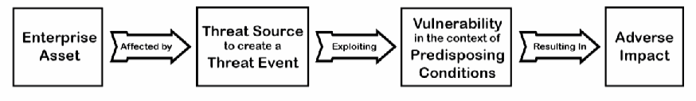
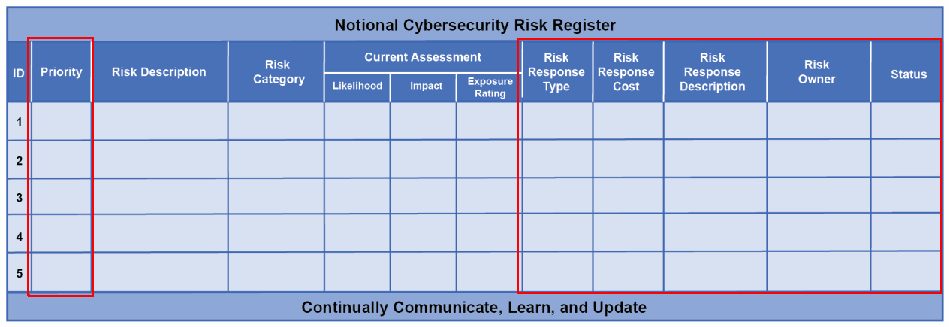
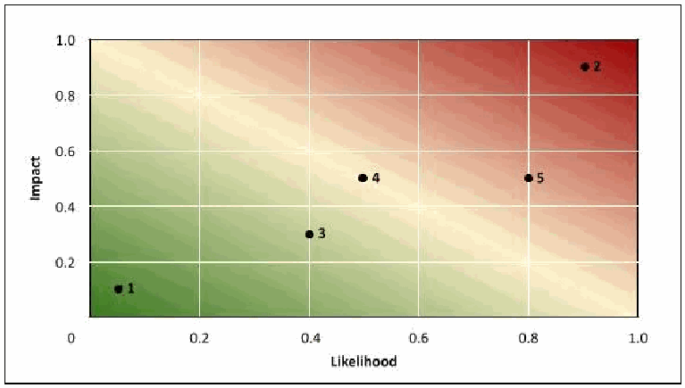
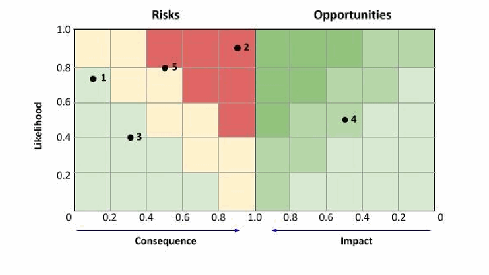
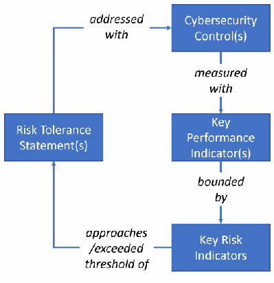

NIST IR 8286B 日本語訳
英語タイトル : Prioritizing Cybersecurity Risk for Enterprise Risk Management日本語タイトル : エンタープライズリスク管理のためのサイバーセキュリティリスクの優先順位付け
公開日 : 2025-02-26
原文URL : https://csrc.nist.gov/pubs/ir/8286/b/upd1/final
翻訳編集 : 自動生成（有志による非公式の日本語訳）, 原文取得日 : 2026-10-31, 訳文 : 400 / 401 ブロック
[要約] NIST IR 8286B は、NIST IR 8286 を補足するシリーズの第 2 弾として、サイバーセキュリティリスク情報を組織全体で活用するための追加の詳細を示す報告書です。各リスクがエンタープライズの目標に及ぼしうる影響に照らして、各リスクの優先順位を決定する必要性と、そのリスクを適切に扱うための選択肢を説明します。エンタープライズ全体のリスク登録簿を支えるために、リスクの優先順位とリスク対応の情報をサイバーセキュリティリスク登録簿（CSRR）にどのように追加するかを説明し、リスク受容、リスク回避、リスク移転、リスク軽減といったリスク対応タイプの選択を扱います。リスク対応の選択と想定コストに関する情報は、エンタープライズ全体のサイバーセキュリティリスクの統合的な全体像を維持するために使われ、その全体像はリスク戦略の確認と必要に応じた調整に使えます。
NIST Interagency Report NIST IR 8286B-upd1
NIST 省庁間報告書 NIST IR 8286B-upd1
Prioritizing Cybersecurity Risk for Enterprise Risk Management
エンタープライズリスク管理のためのサイバーセキュリティリスクの優先順位付け
Stephen Quinn Nahla Ivy Matthew Barrett Greg Witte R. K. Gardner
Stephen Quinn Nahla Ivy Matthew Barrett Greg Witte R. K. Gardner
This publication is available free of charge from: https://doi.org/10.6028/NIST.IR.8286B-upd1
この刊行物は次の場所から無料で入手できます。https://doi.org/10.6028/NIST.IR.8286B-upd1
NIST Interagency Report NIST IR 8286B-upd1
NIST 省庁間報告書 NIST IR 8286B-upd1
Prioritizing Cybersecurity Risk for Enterprise Risk Management
エンタープライズリスク管理のためのサイバーセキュリティリスクの優先順位付け
Stephen Quinn
Stephen Quinn
Computer Security Division
Computer Security Division
Information Technology Laboratory
Information Technology Laboratory
Nahla Ivy
Nahla Ivy
Enterprise Risk Management Office Office of Financial Resource Management
Enterprise Risk Management Office Office of Financial Resource Management
Matthew Barrett
Matthew Barrett
CyberESI Group, Inc.
CyberESI Group, Inc.
Greg Witte
Greg Witte
Huntington Ingalls Industries
Huntington Ingalls Industries
R.K. Gardner
R.K. Gardner
New World Technology Partners
New World Technology Partners
This publication is available free of charge from: https://doi.org/10.6028/NIST.IR.8286B-upd1
この刊行物は次の場所から無料で入手できます。https://doi.org/10.6028/NIST.IR.8286B-upd1
February 2025
2025 年 2 月
INCLUDES UPDATES AS OF 02-26-2025; SEE APPENDIX B
2025 年 2 月 26 日時点の更新を含みます。付録 B を参照
［米国商務省の紋章。公的な標章のため、この非公式サイトには掲載していません。原本 PDF を参照してください。］
U.S. Department of Commerce Howard Lutnick, Secretary of Commerce
米国商務省 Howard Lutnick 商務長官
National Institute of Standards and Technology
米国国立標準技術研究所
Craig Burkhardt, Acting Under Secretary of Commerce for Standards and Technology and Acting NIST Director
Craig Burkhardt、標準技術担当商務次官代理兼NIST所長代理
Certain equipment, instruments, software, or materials, commercial or non-commercial, are identified in this paper in order to specify the experimental procedure adequately. Such identification does not imply recommendation or endorsement of any product or service by NIST, nor does it imply that the materials or equipment identified are necessarily the best available for the purpose.
本書では、実験手順を十分に特定するために、商用・非商用を問わず、特定の機器、計器、ソフトウェア、または資材を明示しています。こうした明示は、NIST がいかなる製品やサービスも推奨または保証することを意味せず、明示した資材や機器がその目的に利用できる最良のものであるとは限らないことも意味しません。
There may be references in this publication to other publications currently under development by NIST in accordance with its assigned statutory responsibilities. The information in this publication, including concepts and methodologies, may be used by federal agencies even before the completion of such companion publications. Thus, until each publication is completed, current requirements, guidelines, and procedures, where they exist, remain operative. For planning and transition purposes, federal agencies may wish to closely follow the development of these new publications by NIST.
本刊行物には、NIST が法令上の責務に従って現在策定中の他の刊行物への言及が含まれる場合があります。概念や方法論を含む本刊行物の情報は、そうした関連刊行物の完成前であっても連邦機関が使用してもよいです。したがって、各刊行物が完成するまでは、現行の要件、ガイドライン、手順が存在する場合には、それらが引き続き有効です。計画と移行のために、連邦機関は、NIST によるこれらの新しい刊行物の策定を注意深く追うことを望む場合があります。
Organizations are encouraged to review all draft publications during public comment periods and provide feedback to NIST. Many NIST cybersecurity publications, other than the ones noted above, are available at https://csrc.nist.gov/publications.
組織には、パブリックコメント期間中にすべてのドラフト刊行物を確認し、NIST にフィードバックを提供することが推奨されています。上記以外にも、NIST の多くのサイバーセキュリティ刊行物が https://csrc.nist.gov/publications で入手できます。
NIST Technical Series Policies Copyright, Use, and Licensing Statements NIST Technical Series Publication Identifier Syntax
NIST 技術シリーズの方針、著作権・使用・ライセンスに関する声明、NIST 技術シリーズ刊行物識別子の構文
Publication History Approved by the NIST Editorial Review Board on 2025-02-24 Supersedes NIST IR 8286B (February 2022) https://doi.org/10.6028/NIST.IR.8286B
刊行履歴 NIST 編集審査委員会により2025-02-24に承認 NIST IR 8286B（2022年2月）に置き換わる https://doi.org/10.6028/NIST.IR.8286B
How to Cite this NIST Technical Series Publication Quinn SD, Ivy N, Barrett M, Witte GA, Gardner RK (2025) Prioritizing Cybersecurity Risk for Enterprise Risk Management. (National Institute of Standards and Technology, Gaithersburg, MD), NIST Interagency Report (IR) NIST IR 8286B-upd1. https://doi.org/10.6028/NIST.IR.8286B-upd1
このNIST技術シリーズ刊行物の引用方法 Quinn SD, Ivy N, Barrett M, Witte GA, Gardner RK (2025) Prioritizing Cybersecurity Risk for Enterprise Risk Management. (National Institute of Standards and Technology, Gaithersburg, MD), NIST Interagency Report (IR) NIST IR 8286B-upd1. https://doi.org/10.6028/NIST.IR.8286B-upd1
Author ORCID iDs Stephen D. Quinn: 0000-0003-1436-684X Nahla Ivy: 0000-0003-4741-422X Matthew Barrett: 0000-0002-7689-427X Gregory A. Witte: 0000-0002-5425-1097
著者のORCID iD Stephen D. Quinn: 0000-0003-1436-684X Nahla Ivy: 0000-0003-4741-422X Matthew Barrett: 0000-0002-7689-427X Gregory A. Witte: 0000-0002-5425-1097
Contact Information nistir8286@nist.gov
連絡先 nistir8286@nist.gov
National Institute of Standards and Technology Attn: Applied Cybersecurity Division, Information Technology Laboratory 100 Bureau Drive (Mail Stop 2000) Gaithersburg, MD 20899-2000
National Institute of Standards and Technology 宛先：Applied Cybersecurity Division, Information Technology Laboratory 100 Bureau Drive (Mail Stop 2000) Gaithersburg, MD 20899-2000
Additional Information Additional information about this publication is available at https://csrc.nist.gov/pubs/ir/8286/b/upd1/final, including related content, potential updates, and document history.
追加情報 関連コンテンツ、更新の可能性、文書履歴を含む、本刊行物の追加情報は https://csrc.nist.gov/pubs/ir/8286/b/upd1/final で入手できます。
All comments are subject to release under the Freedom of Information Act (FOIA).
すべてのコメントは、情報自由法（FOIA）に基づいて公開される場合があります。
Abstract
概要
This document is the second in a series that supplements NIST Interagency Report (IR) 8286, Integrating Cybersecurity and Enterprise Risk Management (ERM). This series provides additional detail regarding the enterprise application of cybersecurity risk information; the previous document, NIST IR 8286A, provided detail regarding stakeholder risk guidance and risk identification and analysis. This second publication describes the need for determining the priorities of each of those risks in light of their potential impact on enterprise objectives, as well as options for properly treating that risk. This report describes how risk priorities and risk response information are added to the cybersecurity risk register (CSRR) in support of an overall enterprise risk register. Information about the selection of and projected cost of risk response will be used to maintain a composite view of cybersecurity risks throughout the enterprise, as detailed in NIST IR 8286C. These composite views may be used to confirm and, if necessary, adjust risk strategy to ensure mission success.
本書は、NIST 省庁間報告書（IR）8286『Integrating Cybersecurity and Enterprise Risk Management (ERM)』を補足するシリーズの第 2 弾です。このシリーズは、サイバーセキュリティリスク情報を組織全体で活用するための追加の詳細を示します。前の文書である NIST IR 8286A は、ステークホルダーのリスクガイダンスと、リスクの特定および分析の詳細を示しました。この第 2 の刊行物は、それらの各リスクがエンタープライズの目標に及ぼしうる影響に照らして、各リスクの優先順位を決定する必要性と、そのリスクを適切に扱うための選択肢を説明します。本報告書は、エンタープライズ全体のリスク登録簿を支えるために、リスクの優先順位とリスク対応の情報をサイバーセキュリティリスク登録簿（CSRR）にどのように追加するかを説明します。リスク対応の選択と想定コストに関する情報は、NIST IR 8286C で詳述されているとおり、エンタープライズ全体のサイバーセキュリティリスクの統合的な全体像を維持するために使われます。これらの統合的な全体像は、ミッションの成功を確実にするために、リスク戦略を確認し、必要に応じて調整するのに使えます。
Keywords
キーワード
cybersecurity risk management; cybersecurity risk measurement; cybersecurity risk register (CSRR); enterprise risk management (ERM); risk aggregation; risk conditioning; risk optimization; risk prioritization; risk response.
cybersecurity risk management; cybersecurity risk measurement; cybersecurity risk register (CSRR); enterprise risk management (ERM); risk aggregation; risk conditioning; risk optimization; risk prioritization; risk response.
Reports on Computer Systems Technology
コンピュータシステム技術に関する報告書
The Information Technology Laboratory (ITL) at the National Institute of Standards and Technology (NIST) promotes the U.S. economy and public welfare by providing technical leadership for the Nation’s measurement and standards infrastructure. ITL develops tests, test methods, reference data, proof of concept implementations, and technical analyses to advance the development and productive use of information technology. ITL’s responsibilities include the development of management, administrative, technical, and physical standards and guidelines for the cost-effective security and privacy of other than national security-related information in federal information systems.
米国国立標準技術研究所（NIST）の情報技術研究所（ITL）は、国の測定・標準インフラに技術的なリーダーシップを提供することで、米国経済と公共の福祉を促進しています。ITL は、情報技術の発展と生産的な利用を進めるために、テスト、テスト方法、参照データ、概念実証実装、技術分析を開発しています。ITL の責務には、連邦情報システムにおける国家安全保障関連以外の情報の費用対効果の高いセキュリティとプライバシーのための、管理、運用、技術、物理に関する標準とガイドラインの策定が含まれます。
Audience
想定読者
The primary audience for this publication includes both federal government and non-federal government cybersecurity, privacy, and cyber supply chain professionals at all levels who understand cybersecurity but may be unfamiliar with the details of enterprise risk management (ERM).
本刊行物の主な読者は、連邦政府および非連邦政府の、あらゆる階層のサイバーセキュリティ、プライバシー、サイバーサプライチェーンの専門家であり、サイバーセキュリティは理解しているものの、エンタープライズリスク管理（ERM）の詳細には詳しくない可能性がある人々です。
The secondary audience includes both federal and non-federal government corporate officers, high-level executives, ERM officers and staff members, and others who understand ERM but may be unfamiliar with the details of cybersecurity.
副次的な読者は、連邦政府および非連邦政府の、企業の役員、上級幹部、ERM の責任者と職員などであり、ERM は理解しているものの、サイバーセキュリティの詳細には詳しくない可能性がある人々です。
All readers are expected to gain an improved understanding of how cybersecurity risk management (CSRM) and ERM complement and relate to each other, as well as the benefits of integrating their use.
すべての読者は、サイバーセキュリティリスク管理（CSRM）と ERM が互いにどのように補完し合い、関連しているかについての理解を深め、両者を統合して使うことの利点も理解できると期待されます。
Document Conventions
文書の表記規則
For this document, the terms “cybersecurity” and “information security” are used interchangeably. While information security is generally considered to be all-encompassing – including the cybersecurity domain – the term cybersecurity has expanded in conventional usage to be equivalent to information security. Likewise, the terms Cybersecurity Risk Management (CSRM) and Information Security Risk Management (ISRM) are used interchangeably based on the same reasoning.
本書では、「サイバーセキュリティ」と「情報セキュリティ」の用語を同じ意味で使います。情報セキュリティは、一般にサイバーセキュリティの領域を含むすべてを包含するものと考えられていますが、サイバーセキュリティという用語は、慣用的な使い方では情報セキュリティと同等の意味に拡大しています。同じ理由から、サイバーセキュリティリスク管理（CSRM）と情報セキュリティリスク管理（ISRM）の用語も同じ意味で使います。
Patent Disclosure Notice
特許開示に関する通知
NOTICE: ITL has requested that holders of patent claims whose use may be required for compliance with the guidance or requirements of this publication disclose such patent claims to ITL. However, holders of patents are not obligated to respond to ITL calls for patents and ITL has not undertaken a patent search in order to identify which, if any, patents may apply to this publication.
通知：ITL は、本刊行物のガイダンスまたは要件への準拠のために使用が必要となりうる特許請求の権利者に対し、その特許請求を ITL に開示するよう求めています。ただし、特許権者には、ITL による特許の呼びかけに応じる義務はなく、ITL は、本刊行物に適用される特許があるかどうか、あるとすればどれかを特定するための特許調査を行っていません。
As of the date of publication and following call(s) for the identification of patent claims whose use may be required for compliance with the guidance or requirements of this publication, no such patent claims have been identified to ITL.
公表日の時点で、本刊行物のガイダンスまたは要件への準拠のために使用が必要となりうる特許請求の特定を求める呼びかけを行った後も、そのような特許請求は ITL に特定されていません。
No representation is made or implied by ITL that licenses are not required to avoid patent infringement in the use of this publication.
ITL は、本刊行物の使用にあたって特許侵害を避けるためにライセンスが不要であるという表明を、明示的にも黙示的にも行いません。
Table of Contents
目次
List of Tables
表の一覧
List of Figures
図の一覧
Acknowledgments
謝辞
The authors wish to thank all individuals, organizations, and enterprises that contributed to the creation of this document. This includes Lisa Carnahan, Amy Mahn, Matt Scholl, and Kevin Stine of NIST; Daniel Topper and Larry Feldman of Huntington Ingalls Industries; and Mat Heyman of Impresa Management Solutions. Organizations and individuals who provided feedback on the public comment drafts include Piyavauth Bhutrakarn, William Bowman, Julie Chua, Monique Creary, Kim Isaac, Tina Newell, Khairun Pannah, Kate Polevitzky, Nicole Rohloff, Anu Sharma, Curt Sizemore and the National Center for Health Statistics Information Systems Security Officer as part of the Cyber-ERM Community of Interest; Joel Crook, Denis Maratos and Michael Whitley of Consolidated Nuclear Security, LLC; John Britton of Google; Kelly Hood of Optic Cyber Solutions; Apolonio Garcia of the Society of Information Risk Analysts; and Amy Hamilton of the U.S. Department of Energy.
著者らは、本書の作成に貢献したすべての個人、組織、企業に感謝します。これには、NIST の Lisa Carnahan、Amy Mahn、Matt Scholl、Kevin Stine、Huntington Ingalls Industries の Daniel Topper と Larry Feldman、Impresa Management Solutions の Mat Heyman が含まれます。パブリックコメント版にフィードバックを寄せた組織と個人には、Cyber-ERM Community of Interest の一員としての Piyavauth Bhutrakarn、William Bowman、Julie Chua、Monique Creary、Kim Isaac、Tina Newell、Khairun Pannah、Kate Polevitzky、Nicole Rohloff、Anu Sharma、Curt Sizemore と National Center for Health Statistics の情報システムセキュリティ責任者、Consolidated Nuclear Security, LLC の Joel Crook、Denis Maratos、Michael Whitley、Google の John Britton、Optic Cyber Solutions の Kelly Hood、Society of Information Risk Analysts の Apolonio Garcia、U.S. Department of Energy の Amy Hamilton が含まれます。
Executive Summary
エグゼクティブサマリー
All organizations face a broad array of risks, including cybersecurity risks. For U.S. Federal Government agencies, the Office of Management and Budget (OMB) Circular A-11 defines risk as “the effect of uncertainty on objectives” [1]. An organization’s business objectives can be impacted by such effects, so this uncertainty must be managed at various hierarchical levels.
あらゆる組織が、サイバーセキュリティリスクを含む幅広いリスクに直面しています。米国連邦政府機関については、行政管理予算局（OMB）の Circular A-11 が、リスクを「目的に対する不確実性の影響」と定義しています [1]。組織の事業目的はそのような影響を受ける可能性があるため、この不確実性は、さまざまな階層で管理しなければなりません。
This report highlights Cybersecurity Risk Management (CSRM) aspects that are inherent to enterprises, organizations, and systems. The terms organization and enterprise are often used interchangeably; for the purposes of this document, both an organization and an enterprise are defined as an entity of any size, complexity, or positioning within a larger organizational structure. The term enterprise level refers to the top level of the hierarchy where senior leaders have unique risk governance responsibilities. Each enterprise, such as a corporation or government agency, is comprised of organizations supported by systems.1 The term organizational level refers to the various middle levels of the hierarchy between the system level (lowest level) and the enterprise level (highest level).
本報告書は、エンタープライズ、組織、システムに固有のサイバーセキュリティリスク管理（CSRM）の側面を取り上げます。組織（organization）とエンタープライズ（enterprise）の用語はしばしば同じ意味で使われますが、本書では、組織もエンタープライズも、規模、複雑さ、より大きな組織構造の中での位置付けを問わず、あらゆる主体を指すものと定義します。エンタープライズレベルという用語は、上級幹部が固有のリスクガバナンスの責任を負う、階層の最上位を指します。企業や政府機関などの各エンタープライズは、システムによって支援される組織から構成されます。1 組織レベルという用語は、システムレベル（最下位）とエンタープライズレベル（最上位）の間にある、さまざまな中間階層を指します。
Enterprise risk management (ERM) calls for understanding the key risks that an organization faces. This document provides supplemental guidance for aligning cybersecurity risks with an organization’s overall ERM program. To minimize the extent to which cybersecurity risks impede enterprise missions and objectives, there must be effective collaboration among CSRM and ERM managers. This document helps enterprises apply, improve, and monitor the quality of that cooperation and communication.
エンタープライズリスク管理（ERM）では、組織が直面する主要なリスクを理解することが求められます。本書は、サイバーセキュリティリスクを組織全体の ERM プログラムに整合させるための補足ガイダンスを提供します。サイバーセキュリティリスクがエンタープライズのミッションと目的を妨げる程度を最小限にするには、CSRM と ERM の管理者の間で効果的に協力しなければなりません。本書は、エンタープライズがその協力とコミュニケーションを実践し、改善し、その質を監視するのに役立ちます。
This NIST Interagency Report (IR) is part two of a five-part series supporting NIST IR 8286, Integrating Cybersecurity and Enterprise Risk Management (ERM) [2].
この NIST 省庁間報告書（IR）は、NIST IR 8286『Integrating Cybersecurity and Enterprise Risk Management (ERM)』[2] を支える 5 部構成のシリーズの第 2 部です。
![Flow diagram of the NIST IR 8286 series. Left vertical bands mark Enterprise Level (Level 1), Org Level (Level 2) and System Level (Level 3). A column labeled 8286A runs down: Enterprise Mission Goals and Obj. (two-way arrow labeled "Strategy aligned with Mission Updates"), Risk Context and Strategy, Risk Appetite, Risk Tolerance, Risk Scenario Identification, Risk Analysis. Risk Analysis feeds Risk Evaluation at the bottom of a column labeled 8286B, which flows upward through Risk Treatment, Reporting and Monitoring, and Aggregation and Normalization of Risk Registers; a column labeled 8286C continues upward with Integration of Cybersecurity Risk into ERM Profile, Adjustments to Risk Direction and Processes, and Ongoing Assessment and Reporting. Feedback arrows return to Risk Tolerance ("Org-Level Feedback") and to Risk Context and Strategy ("ERM Level Feedback").](assets/ir-8286bupd1/p0011-figure-01.png)
NIST IR 8286 シリーズの流れ図です。左の縦帯は Enterprise Level（Level 1）、Org Level（Level 2）、System Level（Level 3）を示します。8286A と書かれた列は上から Enterprise Mission Goals and Obj.（「Strategy aligned with Mission Updates」と書かれた双方向の矢印）、Risk Context and Strategy、Risk Appetite、Risk Tolerance、Risk Scenario Identification、Risk Analysis と下へ進みます。Risk Analysis は 8286B と書かれた列の最下部の Risk Evaluation につながり、Risk Treatment、Reporting and Monitoring、Aggregation and Normalization of Risk Registers と上へ進みます。8286C と書かれた列は Integration of Cybersecurity Risk into ERM Profile、Adjustments to Risk Direction and Processes、Ongoing Assessment and Reporting と上へ続きます。フィードバックの矢印が Risk Tolerance（「Org-Level Feedback」）と Risk Context and Strategy（「ERM Level Feedback」）に戻ります。
Fig. 1. NIST IR 8286 series publications describe detailed CSRM/ERM integration
図 1. 詳細な CSRM／ERM 統合を説明する NIST IR 8286 シリーズの刊行物
Fig. 1 illustrates that additional detail and guidance are provided in each report:
図 1 は、各報告書で追加の詳細とガイダンスが提供されることを示しています。
•NIST IR 8286A [3] provides detail regarding cybersecurity risk context, scenarios, and analysis of likelihood and impact. It includes methods to convey risk information, such as cybersecurity risk registers (CSRRs) and risk detail records (RDRs).
•NIST IR 8286A [3] は、サイバーセキュリティリスクのコンテキスト、シナリオ、発生の可能性と影響の分析について詳細を示します。サイバーセキュリティリスク登録簿（CSRR）やリスク詳細記録（RDR）など、リスク情報を伝達する方法も含みます。
•NIST IR 8286B (this report) describes ways to apply risk analysis to help prioritize cybersecurity risk, evaluate and select appropriate risk response, and communicate risk activities as part of an enterprise CSRM strategy.
•NIST IR 8286B（本報告書）は、サイバーセキュリティリスクの優先順位付けを助け、適切なリスク対応を評価・選択し、エンタープライズの CSRM 戦略の一環としてリスク活動を伝達するために、リスク分析を適用する方法を説明します。
•The next document in this series, NIST IR 8286C [4], describes processes for aggregating information from CSRM activities throughout the enterprise. As that information is integrated and harmonized, organizational and enterprise leaders monitor the achievement of risk objectives, consider any changes to risk strategy, and use the combined information to maintain awareness of risk factors and positive risks (or opportunities).
•このシリーズの次の文書である NIST IR 8286C [4] は、エンタープライズ全体の CSRM 活動から情報を集約するプロセスを説明します。その情報が統合・調和されるにつれて、組織およびエンタープライズのリーダーは、リスク目標の達成を監視し、リスク戦略の変更を検討し、統合された情報を使ってリスク要因と正のリスク（または機会）についての認識を維持します。
•NIST IR 8286D [5] describes the identification and management of risk as it propagates from system to organization and from organization to enterprise, which in turn better informs ERM deliberations. It expands typical business impact analysis (BIA) discussions to inform risk prioritization and response by quantifying the organizational impact and enterprise consequences of compromised IT assets.
•NIST IR 8286D [5] は、リスクがシステムから組織へ、組織からエンタープライズへと伝播する際の、リスクの特定と管理を説明します。これにより、ERM の審議にいっそう的確な情報が提供されます。典型的な事業影響度分析（BIA）の議論を拡張し、侵害された IT 資産が組織に及ぼす影響とエンタープライズにもたらす結果を定量化することで、リスクの優先順位付けと対応に情報を提供します。
All participants in the enterprise who play a role in CSRM and/or ERM should use consistent methods to prioritize and respond to risk, including methods for communicating results. This report provides guidance for applying a consistent risk strategy at all enterprise levels (Section 2.1). Based on the risk identification and risk analysis described in NIST IR 8286A and the BIA conducted in NIST IR 8286D, NIST IR 8286B provides recommendations for determining, responding to, and reporting the relative priorities of risks, as documented in the CSRR, in light of the enterprise’s risk strategy (Section 2.2), selecting risk response actions (Section 2.3), finalizing the CSRR (Section 2.4), and conditioning results in preparation for risk report aggregation (Section 2.5). These enriched CSRRs can be aggregated, normalized, analyzed, and optimized as detailed in NIST IR 8286C.
CSRM や ERM に役割を持つエンタープライズのすべての参加者は、結果を伝達する方法を含め、リスクの優先順位付けと対応に一貫した方法を用いるべきです。本報告書は、エンタープライズのすべての階層で一貫したリスク戦略を適用するためのガイダンスを提供します（2.1 節）。NIST IR 8286A で述べたリスクの特定と分析、および NIST IR 8286D で実施された BIA に基づき、NIST IR 8286B は次の推奨事項を示します。エンタープライズのリスク戦略に照らして、CSRR に記載されるリスクの相対的な優先順位を決定し、対応し、報告すること（2.2 節）、リスク対応措置を選択すること（2.3 節）、CSRR を最終化すること（2.4 節）、リスク報告の集約に備えて結果を整えること（2.5 節）です。こうして充実させた CSRR は、NIST IR 8286C で詳述されているとおり、集約、正規化、分析、最適化できます。
1. Introduction
1. はじめに
This document provides guidance that supplements NIST IR 8286, Integrating Cybersecurity and Enterprise Risk Management (ERM) [2]. This is the second of a series of companion publications that provide guidance for implementing, monitoring, and maintaining an enterprise approach designed to integrate cybersecurity risk management (CSRM) into ERM.2 Readers of this report will benefit from reviewing the foundation document, NIST IR 8286, since many of the concepts described in this report are based upon practices and definitions established in that NIST IR.
本書は、NIST IR 8286『Integrating Cybersecurity and Enterprise Risk Management (ERM)』[2] を補足するガイダンスを提供します。これは、サイバーセキュリティリスク管理（CSRM）を ERM に統合するよう設計されたエンタープライズのアプローチを、実装、監視、維持するためのガイダンスを提供する、一連の補完的な刊行物の第 2 弾です。2 本報告書で説明する概念の多くは、その NIST IR で確立された実践と定義に基づいているため、本報告書の読者は、基盤となる文書である NIST IR 8286 を確認しておくと有益です。
Each publication in the series, as illustrated in Fig. 2, provides detailed guidance to supplement topics from NIST IR 8286.
図 2 に示すように、シリーズの各刊行物は、NIST IR 8286 のトピックを補足する詳細なガイダンスを提供します。
![The same NIST IR 8286 series flow diagram as Fig. 1, with the NIST IR 8286B activities (Risk Evaluation, Risk Treatment, Reporting and Monitoring, and Aggregation and Normalization of Risk Registers) shown in dark boxes and all other activities shaded lighter. Left vertical bands mark Enterprise Level (Level 1), Org Level (Level 2) and System Level (Level 3). A column labeled 8286A runs down: Enterprise Mission Goals and Obj. (two-way arrow labeled "Strategy aligned with Mission Updates"), Risk Context and Strategy, Risk Appetite, Risk Tolerance, Risk Scenario Identification, Risk Analysis. Risk Analysis feeds Risk Evaluation at the bottom of a column labeled 8286B, which flows upward through Risk Treatment, Reporting and Monitoring, and Aggregation and Normalization of Risk Registers; a column labeled 8286C continues upward with Integration of Cybersecurity Risk into ERM Profile, Adjustments to Risk Direction and Processes, and Ongoing Assessment and Reporting. Feedback arrows return to Risk Tolerance ("Org-Level Feedback") and to Risk Context and Strategy ("ERM Level Feedback").](assets/ir-8286bupd1/p0013-figure-01.png)
図1と同じ NIST IR 8286 シリーズの流れ図で、NIST IR 8286B の活動（Risk Evaluation、Risk Treatment、Reporting and Monitoring、Aggregation and Normalization of Risk Registers）を濃い箱で、それ以外の活動を薄い色で示しています。左の縦帯は Enterprise Level（Level 1）、Org Level（Level 2）、System Level（Level 3）を示します。8286A と書かれた列には、上から Enterprise Mission Goals and Obj.（「Strategy aligned with Mission Updates」と書かれた双方向の矢印）、Risk Context and Strategy、Risk Appetite、Risk Tolerance、Risk Scenario Identification、Risk Analysis が並びます。Risk Analysis は 8286B と書かれた列の最下部にある Risk Evaluation につながり、そこから Risk Treatment、Reporting and Monitoring、Aggregation and Normalization of Risk Registers へと上向きに進みます。8286C と書かれた列には、Integration of Cybersecurity Risk into ERM Profile、Adjustments to Risk Direction and Processes、Ongoing Assessment and Reporting が続きます。フィードバックの矢印は Risk Tolerance（「Org-Level Feedback」）と Risk Context and Strategy（「ERM Level Feedback」）に戻ります。
Fig. 2. NIST IR 8286B activities as part of CSRM/ERM integration
図 2. CSRM／ERM 統合の一部としての NIST IR 8286B の活動
Activities shown in dark blue are described in this report; those in other documents are shown in a lighter shade.
濃い青で示した活動は本報告書で説明しており、ほかの文書で説明している活動は薄い色で示しています。
•NIST IR 8286A [3] details the context, scenario identification, and analysis of likelihood and impact of cybersecurity risk. It also includes methods to convey risk information, such as cybersecurity risk registers (CSRRs) and risk detail records (RDRs).
•NIST IR 8286A [3] は、サイバーセキュリティリスクのコンテキスト、シナリオの特定、発生可能性と影響の分析について詳しく説明します。サイバーセキュリティリスク登録簿（CSRR）やリスク詳細記録（RDR）など、リスク情報を伝達する方法も含みます。
•NIST IR 8286B (this report) describes ways to apply risk analysis to help prioritize cybersecurity risk, evaluate and select appropriate risk responses, and communicate risk activities as part of an enterprise CSRM strategy.
•NIST IR 8286B（本報告書）は、サイバーセキュリティリスクの優先順位付けを助け、適切なリスク対応を評価・選択し、エンタープライズの CSRM 戦略の一環としてリスク活動を伝達するために、リスク分析を適用する方法を説明します。
•NIST IR 8286C [4] describes processes for aggregating information from CSRM activities throughout the enterprise. As that information is integrated and harmonized, organizational and enterprise leaders monitor the achievement of risk objectives, consider any changes to risk strategy, and use the combined information to maintain awareness of risk factors and positive risks (or opportunities).
•NIST IR 8286C [4] は、エンタープライズ全体の CSRM 活動から情報を集約するプロセスを説明します。その情報が統合・調和されるにつれて、組織およびエンタープライズのリーダーは、リスク目標の達成を監視し、リスク戦略の変更を検討し、統合された情報を使ってリスク要因と正のリスク（または機会）についての認識を維持します。
•NIST IR 8286D [5] describes the identification and management of risk as it propagates from system to organization and from organization to enterprise, which in turn better informs ERM deliberations. It expands typical business impact analysis (BIA) discussions to inform risk prioritization and response by quantifying the organizational impact and enterprise consequences of compromised IT assets.
•NIST IR 8286D [5] は、リスクがシステムから組織へ、組織からエンタープライズへと伝播する際の、リスクの特定と管理を説明します。これにより、ERM の審議にいっそう的確な情報が提供されます。典型的な事業影響度分析（BIA）の議論を拡張し、侵害された IT 資産が組織に及ぼす影響とエンタープライズにもたらす結果を定量化することで、リスクの優先順位付けと対応に情報を提供します。
A key point established by NIST IR 8286 is that the terms organization and enterprise are often used interchangeably. That report defines both an organization and an enterprise as an entity of any size, complexity, or positioning within a larger organizational structure (e.g., a federal agency or company). It defines the enterprise level as a unique type of organization, one in which individual senior leaders govern at the highest point in the hierarchy and have unique risk management responsibilities, such as fiduciary reporting and establishing risk strategy (e.g., risk appetite, methods). Notably, government and private industry CSRM and ERM programs have different oversight and reporting requirements (e.g., accountability to Congress versus accountability to shareholders), but the general needs and processes are similar.
NIST IR 8286 が確立した重要な点は、組織とエンタープライズの用語がしばしば同じ意味で使われるということです。同報告書は、組織もエンタープライズも、規模、複雑さ、より大きな組織構造の中での位置付け（たとえば連邦機関や企業）を問わず、あらゆる主体を指すと定義しています。エンタープライズレベルは特有の種類の組織であり、階層の最上位で個々の上級幹部が統治し、受託者としての報告やリスク戦略（たとえばリスク選好度、方法）の確立といった、固有のリスク管理の責任を負うものと定義しています。特に、政府と民間企業の CSRM および ERM プログラムは、監督と報告の要件（たとえば議会への説明責任と株主への説明責任）が異なりますが、一般的なニーズとプロセスは似ています。
As shown in Fig. 2, NIST IR 8286B draws upon the risk identification and analysis described in NIST IR 8286A, Identifying and Estimating Cybersecurity Risk for Enterprise Risk Management, and focuses on steps for evaluating, selecting, implementing, and recording risk response. The sections below describe the need to treat cybersecurity risk in alignment with enterprise risk strategy. Additionally, the sections describe the approach for applying and maintaining risk responses to achieve the risk direction conveyed through risk appetite and risk tolerance statements. The publication also follows the convention from NIST IRs 8286 and 8286A of using a CSRR to record and communicate risk information. NIST IR 8286A offers recommendations for completing five of the CSRR columns, and Section 3 of this publication illustrates how to complete the remaining six columns that relate to risk prioritization and response. The reader will also benefit from the use of the RDR, described in Appendix B of NIST IR 8286A, for communicating extended risk description, analysis, and response details.
図 2 に示すように、NIST IR 8286B は、NIST IR 8286A『Identifying and Estimating Cybersecurity Risk for Enterprise Risk Management』で述べたリスクの特定と分析を土台とし、リスク対応の評価、選択、実装、記録の手順に焦点を当てます。以下の各節では、エンタープライズのリスク戦略に整合させてサイバーセキュリティリスクを扱う必要性を説明します。さらに、リスク選好度とリスク許容度の記述を通じて示されるリスクの方向性を達成するために、リスク対応を適用し維持するアプローチも説明します。また本刊行物は、リスク情報の記録と伝達に CSRR を使用するという、NIST IR 8286 と 8286A の慣例にも従います。NIST IR 8286A は CSRR の 5 つの列を記入するための推奨事項を示しており、本刊行物の 3 節は、リスクの優先順位付けと対応に関する残りの 6 つの列を記入する方法を示します。読者は、拡張したリスクの説明、分析、対応の詳細を伝達するために、NIST IR 8286A の付録 B で説明している RDR を使うことでも、有益な効果を得られます。
1.1. Purpose and Scope
1.1. 目的と範囲
This document focuses on improving understanding and communication between and among CSRM and ERM managers, high-level executives, and corporate officers to help ensure the effective integration of cybersecurity considerations as a critical subset of the overarching enterprise risks. This includes defining roles and responsibilities within the organization to ensure that objectives are met. The risk management community has observed an opportunity for increased rigor in the way cybersecurity risk identification, analysis, and reporting are performed at all levels of the enterprise. This publication is designed to provide guidance and to further conversations regarding ways to improve CSRM and the coordination of CSRM with ERM.
本書は、CSRM と ERM の管理者、上級幹部、企業の役員の間および相互の理解とコミュニケーションを改善することに焦点を当て、包括的なエンタープライズリスクの重要な部分集合としてのサイバーセキュリティの考慮事項を、効果的に統合できるようにします。これには、目的が確実に達成されるように、組織内の役割と責任を定義することが含まれます。リスク管理コミュニティは、エンタープライズのあらゆる階層で、サイバーセキュリティリスクの特定、分析、報告の方法を、より厳密にする余地があると見ています。本刊行物は、CSRM を改善し、CSRM と ERM の連携を改善する方法に関するガイダンスを提供し、議論を促進するように設計されています。
The goals of this document are to:
本書の目標は次のとおりです。
•Describe how enterprise risk strategy and other governance processes (e.g., organizational oversight, risk governance, risk management) help to establish the relative priority of scenarios in the CSRR,
•エンタープライズのリスク戦略とその他のガバナンスプロセス（たとえば組織の監督、リスクガバナンス、リスク管理）が、CSRR 内のシナリオの相対的な優先順位を確立するのにどのように役立つかを説明すること。
•Present various enterprise risk factors that influence risk priorities, and
•リスクの優先順位に影響するさまざまなエンタープライズのリスク要因を提示すること。
•Aid in preparing risk response details and results in preparation for feedback to refine and adjust risk direction.
•リスクの方向性を洗練し調整するためのフィードバックに備えて、リスク対応の詳細と結果を準備するのを助けること。
This document continues the discussion to bridge existing private industry risk management processes with government-mandated federal agency enterprise and cybersecurity risk requirements derived from OMB Circulars A-123 and A-130 [6][7]. It builds upon concepts introduced in NIST IR 8286 [2] and complements other documents in this series. It also references some materials that are specifically intended for use by federal agencies and will be highlighted as such, but the concepts and approaches are intended to be useful to all enterprises.
本書は、民間企業の既存のリスク管理プロセスと、OMB Circular A-123 および A-130 [6][7] に由来する、政府が義務付ける連邦機関のエンタープライズおよびサイバーセキュリティリスクの要件とを橋渡しする議論を続けます。NIST IR 8286 [2] で示された概念を土台とし、このシリーズの他の文書を補完します。また、連邦機関での使用を特に意図した資料にも言及し、その旨を明示しますが、概念とアプローチはあらゆるエンタープライズに有用であることを意図しています。
1.2. Supporting the Risk Management Cycle
1.2. リスク管理サイクルの支援
NIST IR 8286A describes how to coordinate CSRM and ERM through the use of risk registers and RDRs and expands on topics that were introduced in NIST IR 8286. Such lists of risks are critical for organizing and communicating risk information throughout the enterprise, but unless that communication is paired with effective risk analysis, evaluation, response, and monitoring, those lists are of little value. NIST IR 8286A focuses on ways to identify cybersecurity risk scenarios and to analyze the likelihood that those risks would adversely impact the enterprise mission. NIST IR 8286B continues that discussion by detailing processes for responding to those risks and further completing and communicating the risk registers and RDRs as informed by enterprise drivers.
NIST IR 8286A は、リスク登録簿と RDR を使って CSRM と ERM を調整する方法を説明し、NIST IR 8286 で導入されたトピックを拡張しています。こうしたリスクの一覧は、エンタープライズ全体でリスク情報を整理し伝達するために不可欠ですが、そのコミュニケーションが効果的なリスク分析、評価、対応、監視と組み合わされていなければ、それらの一覧にはほとんど価値がありません。NIST IR 8286A は、サイバーセキュリティリスクシナリオを特定する方法と、それらのリスクがエンタープライズのミッションに悪影響を及ぼす可能性を分析する方法に焦点を当てています。NIST IR 8286B は、それらのリスクに対応し、エンタープライズの推進要因を踏まえてリスク登録簿と RDR をさらに完成させ伝達するプロセスを詳述することで、この議論を引き継ぎます。
In support of effective risk decisions, NIST IR 8286B focuses on the risk evaluation process and on ways to select, report and monitor risk response. This publication helps the reader populate the priority, risk response, risk owner, and status fields columns of the CSRR (see Fig. 10).
効果的なリスク決定を支援するため、NIST IR 8286B は、リスク評価のプロセスと、リスク対応を選択、報告、監視する方法に焦点を当てます。本刊行物は、読者が CSRR の優先度、リスク対応、リスク所有者、ステータスの各フィールドに値を記入するのに役立ちます（図 10 を参照）。
Results of the activities described in NIST IR 8286B support the communication of risk response and reporting as feedback for senior leaders’ risk direction. Details of that communication are described in NIST IR 8286C. As organization-level and system-level risk managers respond to risks in accordance with enterprise strategy and guidance, the results of that response (both individually and in aggregate) inform senior leaders about the efficacy of their direction. Based on the results, leaders may then adjust risk responses to ensure ongoing support for enterprise mission objectives.
NIST IR 8286B で説明する活動の結果は、上級幹部のリスクの方向性に対するフィードバックとして、リスク対応と報告の伝達を支援します。そのコミュニケーションの詳細は NIST IR 8286C で説明しています。組織レベルとシステムレベルのリスク管理者が、エンタープライズの戦略とガイダンスに従ってリスクに対応すると、その対応の結果（個別のものと集約したものの両方）が、上級幹部に対して、自らの方向性の有効性についての情報をもたらします。リーダーはその結果に基づいて、エンタープライズのミッション目標への継続的な支援を確保するために、リスク対応を調整できます。
1.3. Supporting the Enterprise Cybersecurity Risk Life Cycle
1.3. エンタープライズのサイバーセキュリティリスクライフサイクルの支援
The activities in Sec. 2 of this publication draw upon those in NIST IR 8286A that focus on the first half of the CSRM process. The CSRR is used to record and communicate various cybersecurity risk considerations that support the ERM process. Guidance throughout this series references stakeholders at various levels, with senior leaders defining ERM scope, context, and strategy at enterprise levels, and others providing management and implementation throughout that enterprise. Senior leaders also establish a risk appetite that sets the tone and, where possible, a quantified range for how risk – including cybersecurity risk – will be handled within the enterprise. The risk appetite is interpreted at enterprise and organizational levels and, in turn, helps to define the risk tolerance for specific risks, types of risk, or performance benchmarks. Tolerance – the acceptable level of variation that management is willing to allow – describes the acceptable level of performance risk in accordance with the stated risk appetite.
本刊行物の 2 節の活動は、CSRM プロセスの前半に焦点を当てた NIST IR 8286A の活動を土台としています。CSRR は、ERM プロセスを支えるさまざまなサイバーセキュリティリスクの考慮事項を記録し伝達するために使われます。このシリーズ全体のガイダンスは、さまざまな階層のステークホルダーに言及しています。上級幹部はエンタープライズレベルで ERM の範囲、コンテキスト、戦略を定義し、その他の関係者はエンタープライズ全体で管理と実装を担います。上級幹部はまた、サイバーセキュリティリスクを含むリスクをエンタープライズ内でどのように扱うかの基調と、可能であれば定量化した範囲を設定するリスク選好度を確立します。リスク選好度は、エンタープライズレベルと組織レベルで解釈され、その結果、特定のリスク、リスクの種類、またはパフォーマンスのベンチマークに対するリスク許容度を定義する助けとなります。許容度は、管理者が許容する意思のある変動の許容可能な水準を示し、表明されたリスク選好度に従ったパフォーマンスリスクの許容可能な水準を表します。
The risk prioritization and response in this report are based upon the risk scenario descriptions that help to put each type of risk into perspective and enable the analysis of risk likelihood and consequences. Fig. 3 illustrates the inputs to risk scenarios as detailed in NIST IR 8286A.
本報告書のリスクの優先順位付けと対応は、各種のリスクを適切に位置付け、リスクの発生可能性と結果の分析を可能にする、リスクシナリオの記述に基づいています。図 3 は、NIST IR 8286A で詳述されているリスクシナリオへの入力を示しています。

矢印でつながった箱の列です。Enterprise Asset（企業の資産）が「Affected by」を経て、Threat Source（脅威源）とThreat Event（脅威事象）を生み出す「Threat Source to create a Threat Event」に続き、「Exploiting」を経て、Predisposing Conditions（素因となる条件）の文脈における Vulnerability（脆弱性）に至ります。さらに「Resulting In」を経て Adverse Impact（悪影響）に至ります。
Fig. 3. Inputs to Risk Scenario Identification
図 3. リスクシナリオ特定への入力
As described in Section 2, prioritization and response will take place based on an analysis of risk scenarios to determine the likelihood that a threat source will act, that a vulnerability does or will exist and that an asset will experience an undesirable effect that impacts objectives. Assets are not limited to technology and include any resource that helps to achieve mission objectives (e.g., people, facilities, critical data, intellectual property, and services). By considering this information with other details from throughout the enterprise, stakeholders can review and monitor risk management to ensure that performance is aligned with enterprise strategy and direction. Because all risk is dynamic, monitoring also enables ongoing adjustments to risk appetite, risk identification methods, and risk response.
2 節で説明するとおり、優先順位付けと対応は、リスクシナリオの分析に基づいて行われます。この分析では、脅威源が行動する可能性、脆弱性が存在する、または存在することになる可能性、資産が目的に影響する望ましくない影響を受ける可能性を判断します。資産は技術に限られず、ミッション目標の達成に役立つあらゆる資源（たとえば人、施設、重要なデータ、知的財産、サービス）を含みます。この情報をエンタープライズ全体のその他の詳細情報とあわせて検討することで、ステークホルダーは、パフォーマンスがエンタープライズの戦略および方向性に整合していることを確実にするために、リスク管理を確認し監視できます。すべてのリスクは動的であるため、監視によって、リスク選好度、リスク特定の方法、リスク対応を継続的に調整することも可能になります。
Practitioners at all levels of the enterprise will also benefit from considering opportunities that represent beneficial uncertainty (sometimes referred to as positive risks).3 NIST IR 8286 provides the example of an organization that is evaluating moving a major financial system from an in-house data center to a commercial hosting provider and the potential financial gain of reducing space and utility requirements. While many cybersecurity risk managers have traditionally focused on negative risk, it is important to consider all types of uncertainty and to use that information to perform cost-benefit analyses to better inform decision-making. Section 2.2.4 describes some notional considerations of positive risk.
エンタープライズのあらゆる階層の実務者は、有益な不確かさ（正のリスクと呼ばれることもあります）をもたらす機会を検討することでも、メリットを得られます。3 NIST IR 8286 は、主要な金融システムを自社内のデータセンターから商用ホスティング事業者に移行することを評価し、スペースと光熱の要件を減らすことによる財務上の利益の可能性を検討している組織の例を示しています。従来、多くのサイバーセキュリティリスク管理者は負のリスクに焦点を当ててきましたが、あらゆる種類の不確かさを考慮し、その情報を使って費用対効果分析を行い、意思決定により的確な情報を提供することが重要です。2.2.4 節では、正のリスクについて想定される考慮事項をいくつか説明します。
1.4. Document Structure
1.4. 文書の構成
This publication provides recommendations for determining, responding to, and reporting the relative priorities of risks, as documented in the CSRR, in light of enterprise risk strategy. It provides information and recommendations for determining risk priorities and responses across organizational boundaries (Section 2.1). Other sections support prioritizing based on enterprise impact (Section 2.2), selecting risk response actions (Section 2.3), finalizing the CSRR (Section 2.4), and conditioning results in preparation for risk report aggregation (Section 2.5). The document is organized into the following major sections:
本刊行物は、エンタープライズのリスク戦略に照らして、CSRR に記載されるリスクの相対的な優先順位を決定し、対応し、報告するための推奨事項を示します。組織の境界を越えたリスクの優先順位と対応を決定するための情報と推奨事項を提供します（2.1 節）。ほかの節は、エンタープライズへの影響に基づく優先順位付け（2.2 節）、リスク対応措置の選択（2.3 節）、CSRR の最終化（2.4 節）、リスク報告の集約に備えた結果の調整（2.5 節）を支援します。本書は次の主要な節で構成されています。
•Section 2 details CSRM considerations for evaluating, responding to, communicating, and monitoring cybersecurity risk as an input to an ERM strategy and program.
•2 節では、ERM 戦略とプログラムへの入力として、サイバーセキュリティリスクを評価し、対応し、伝達し、監視するための CSRM の考慮事項を詳述します。
•Section 3 provides a conclusion and highlights important elements regarding connections between this publication and NIST IR 8286C.
•3 節では、結論を示し、本刊行物と NIST IR 8286C との関連に関する重要な要素を取り上げます。
•The References section provides links to external sites or publications that offer additional information.
•参考文献の節は、追加情報を提供する外部サイトや刊行物へのリンクを示します。
•Appendix A contains selected acronyms and abbreviations used in this publication.
•付録 A には、本刊行物で使用している主な略語と頭字語を掲載しています。
•Appendix B provides a change log for this document.
•付録 B は、本書の変更履歴を示します。
2. Cybersecurity Risk Considerations
2. サイバーセキュリティリスクの考慮事項
NIST IR 8286A [3] illustrates methods for creating a CSRR for recording and communicating information about risks to information and technology. The CSRR will generally be completed by someone in a risk management capacity, such as an information security manager or company risk compliance staff member.
NIST IR 8286A [3] は、情報と技術に対するリスクに関する情報を記録し伝達するための CSRR を作成する方法を示しています。CSRR は通常、情報セキュリティ管理者や企業のリスクコンプライアンス担当者など、リスク管理の立場にある人が記入します。
Risk management personnel often assist with recommending appropriate treatment, but there will usually be a risk owner in whom the organization has invested the authority and accountability for making risk-based decisions and who owns the loss associated with a realized risk scenario. The risk manager may or may not be the system owner, defined as the person or organization responsible for the development, procurement, integration, modification, operation, maintenance, and/or final disposition of an information system. For example, a system owner may be a cloud service provider that operates a hosted application, while the risk owner may be a corporate business unit that processes important data within that application.
リスク管理担当者は、適切な対応の推奨を支援することが多いですが、通常は、リスクに基づく決定を行う権限と説明責任を組織から託され、顕在化したリスクシナリオに伴う損失を負うリスク所有者がいます。リスク管理者は、システム所有者である場合もそうでない場合もあります。システム所有者とは、情報システムの開発、調達、統合、変更、運用、保守、または最終的な廃棄に責任を負う個人または組織と定義されます。たとえば、システム所有者は、ホスト型アプリケーションを運用するクラウドサービス提供者であり、リスク所有者は、そのアプリケーション内で重要なデータを処理する企業の事業部門である場合があります。
While NIST IR 8286A focuses on the identification and analysis of various risks representing the middle five fields of the risk register, this section focuses on completing the rest of the risk register based upon that analysis. This section provides information to complete the columns of the register shown in red boxes below in Fig. 4.
NIST IR 8286A は、リスク登録簿の中央の 5 つのフィールドに当たる各種リスクの特定と分析に焦点を当てていますが、本節は、その分析に基づいて残りのリスク登録簿を記入することに焦点を当てます。本節は、図 4 で赤枠に示すレジスタの列を記入するための情報を提供します。

「Notional Cybersecurity Risk Register」と題した空欄のテンプレートです。列は ID、Priority、Risk Description、Risk Category、Current Assessment（Likelihood、Impact、Exposure Rating）、Risk Response Type、Risk Response Cost、Risk Response Description、Risk Owner、Status で、1〜5の番号の空行があります。Priority 列と、Risk Response Type から Status までの5列が赤い枠で囲まれています。下端の帯には「Continually Communicate, Learn, and Update」と書かれています。
Fig. 4. Notional cybersecurity risk register template
図 4. 想定上のサイバーセキュリティリスク登録簿テンプレート
As shown in NIST IRs 8286 and 8286A, a great deal of information can be collected and maintained about various cybersecurity risks. While the CSRR provides a meaningful snapshot or summary of a given set of risk scenarios, it would be impractical to attempt to record all of the relevant information in such an artifact. Therefore, each risk in the CSRR links to a corresponding RDR. In some cases, the CSRR, the RDR, or both are instantiated in digital records within a risk management tool, such as a Governance/Risk/Compliance (GRC) product. A GRC product can be as simple as a set of connected databases or as complex as a global data infrastructure, but the goal is the same: to aggregate the relevant information that is known about various risks in light of enterprise governance direction and known compliance requirements to better inform decision makers.
NIST IR 8286 と 8286A に示されているとおり、さまざまなサイバーセキュリティリスクについて、非常に多くの情報を収集し維持できます。CSRR は、特定のリスクシナリオ群の有意義なスナップショットまたは要約を提供しますが、関連する情報をすべてそのような成果物に記録しようとするのは非現実的です。そのため、CSRR の各リスクは、対応する RDR にリンクされています。場合によっては、CSRR、RDR、またはその両方が、ガバナンス・リスク・コンプライアンス（GRC）製品などのリスク管理ツール内のデジタルレコードとして実体化されます。GRC 製品は、接続された一組のデータベースほど単純なものから、グローバルなデータ基盤ほど複雑なものまでありえますが、目的は同じです。つまり、エンタープライズのガバナンスの方向性と既知のコンプライアンス要件に照らして、さまざまなリスクについて分かっている関連情報を集約し、意思決定者により的確な情報を提供することです。
NIST IR 8286A, Appendix B, contains an example of a risk detail record template. As each enterprise develops risk strategy and direction, the specific model for a CSRR and an RDR should be prescribed. Although this NIST IR 8286 series provides templates, they should be tailored to meet the needs of each enterprise. The use of such templates supports consistent risk tracking and reporting and enables the aggregation and integration of risk information. At a minimum, NIST recommends that a single record be recorded for each scenario in each CSRR. The use of separate registers and detail records enables each to communicate the appropriate level of detail. Many of the items described in the list above represent point-in-time information and should be updated at various points within the life cycle. Whether through a GRC tool or by updating risk records through some other method, information should be kept current based on a frequency established by senior leaders.
NIST IR 8286A の付録 B には、リスク詳細記録テンプレートの例が含まれています。各エンタープライズがリスク戦略と方向性を策定する際には、CSRR と RDR の具体的なモデルを規定すべきです。この NIST IR 8286 シリーズはテンプレートを提供していますが、各エンタープライズのニーズを満たすように調整すべきです。こうしたテンプレートを使用することは、一貫したリスクの追跡と報告を支援し、リスク情報の集約と統合を可能にします。NIST は、最低限、各 CSRR のシナリオごとに 1 件の記録を残すことを推奨します。レジスタと詳細記録を別々に使うことで、それぞれが適切な詳細度で伝達できます。上のリストで説明した項目の多くは、ある時点の情報を表しており、ライフサイクルのさまざまな時点で更新すべきです。GRC ツールを使うか、ほかの何らかの方法でリスク記録を更新するかにかかわらず、情報は上級幹部が定めた頻度に基づいて最新に保つべきです。
2.1. Assessment, Response, and Monitoring Across Enterprise Levels
2.1. エンタープライズの各階層にわたる評価、対応、監視
A key challenge for risk managers is the confusion caused by common risk terms being used for divergent tasks. When considering the application of risk management processes in different contexts, communication among stakeholders may require additional information or clarification about activities. For example, even the meaning of the term control can vary depending on the context in which that term is used.
リスク管理者にとっての重要な課題は、共通のリスク用語が異なる作業に使われることで生じる混乱です。異なるコンテキストでリスク管理プロセスの適用を検討する際、ステークホルダー間のコミュニケーションでは、活動に関する追加情報や明確化が必要になる場合があります。たとえば、統制（control）という用語の意味でさえ、その用語が使われるコンテキストによって異なることがあります。
OMB A-123 states that internal controls “are tools to help program and financial managers achieve results and safeguard the integrity of their programs.” Internal controls provide leaders and managers with methods to help reasonably ensure the achievement of enterprise objectives related to operations, reporting, and compliance. As the enterprise’s leadership establishes an environment by which those internal controls are enacted (the “control environment”), they also perform a risk assessment to identify conditions that may prevent the effective application of those internal controls. Business managers and system owners select and implement security and privacy control activities (e.g., those described in SP 800-53, Security and Privacy Controls for Information Systems and Organizations) to achieve the desired objectives and monitor their effectiveness [8]. Fig. 5 illustrates that the terms control, assess, and monitor are used at all three hierarchy levels yet include different activities.
OMB A-123 は、内部統制は「プログラム管理者と財務管理者が成果を達成し、プログラムの完全性を守るのを助けるツール」であると述べています。内部統制は、運用、報告、コンプライアンスに関するエンタープライズの目標の達成を合理的に確保するのに役立つ方法を、リーダーと管理者に提供します。エンタープライズのリーダーシップは、それらの内部統制が実施される環境（「統制環境」）を確立する際に、内部統制の効果的な適用を妨げうる状況を特定するためのリスク評価も行います。事業管理者とシステム所有者は、望ましい目的を達成し、その有効性を監視するために、セキュリティおよびプライバシーの管理策（たとえば SP 800-53『Security and Privacy Controls for Information Systems and Organizations』に記載されたもの）を選択し実装します [8]。図 5 は、統制（control）、評価（assess）、監視（monitor）の用語が 3 つの階層すべてで使われるものの、異なる活動を含むことを示しています。
![Table with columns Control, Assess and Monitor and rows for three levels. Enterprise Level – Control: Establish internal controls for effectiveness, efficiency, reliability, and compliance. Assess: Identify internal and external risks (informed by current and previous findings) that may prevent the enterprise from meeting objectives. Analyze the potential enterprise effects of those risks. Monitor: Monitor the effectiveness of internal control and perform periodic reviews, reconciliation, and comparison of data. Integrate measures that promote and support effective internal control in accordance with applicable contractual, legislative, and regulatory requirements. Organization Level – Control: Establish general and shared controls (including risk management roles and strategy) to support enterprise-level controls and control objectives. Assess: Assess risk through aggregated information from system level risk assessment results, continuous monitoring, and strategic risk considerations. Monitor: Implement policies and procedures to regularly receive information about the achievement of control objectives within the organization, and provide systematic processes for addressing deficiencies. System Level – Control: Select and implement control activities (e.g., security and privacy controls as described in NIST SP 800-53) to achieve control objectives within defined risk appetite and risk tolerance levels. Assess: Assess whether the system level controls selected for implementation are applied correctly, operating as intended, and producing the desired outcome with respect to meeting the security and privacy requirements for the system and the enterprise. Monitor: Maintain ongoing situational awareness about the security and privacy posture of the information system in support of risk management decisions.](assets/ir-8286bupd1/p0020-figure-01.png)
Control（統制）、Assess（評価）、Monitor（監視）の列と3つのレベルの行からなる表です。Enterprise Level – Control：有効性、効率性、信頼性、コンプライアンスのための内部統制を確立します。Assess：目標達成を妨げる可能性のある内外のリスクを、現在および過去の所見を踏まえて特定し、それらのリスクがエンタープライズにもたらしうる影響を分析します。Monitor：内部統制の有効性を監視し、定期的なレビュー、照合、データ比較を行います。適用される契約上、立法上、規制上の要件に従って、効果的な内部統制を促進・支援する措置を統合します。Organization Level – Control：リスク管理の役割と戦略を含む全般的な統制と共通統制を確立し、エンタープライズレベルの統制と統制目標を支援します。Assess：システムレベルのリスク評価結果、継続的監視、戦略的なリスク上の考慮事項から得られる集約情報を通じてリスクを評価します。Monitor：組織内で統制目標が達成されているかを定期的に把握するための方針と手順を実施し、不備に対処する体系的なプロセスを提供します。System Level – Control：定義されたリスク選好度とリスク許容度の範囲内で統制目標を達成するため、統制活動（たとえば NIST SP 800-53 に記載されたセキュリティおよびプライバシー管理策）を選択し実装します。Assess：実装対象として選択されたシステムレベルの統制が正しく適用され、意図どおりに運用され、システムおよびエンタープライズのセキュリティ・プライバシー要件を満たすという点で望ましい結果を生み出しているかを評価します。Monitor：リスク管理の意思決定を支援するため、情報システムのセキュリティおよびプライバシー態勢に関する状況認識を継続的に維持します。
Fig. 5. ERM and CSRM actions apply common terms in different ways
図 5. ERM と CSRM の活動における共通用語の異なる適用方法
In the same way that controls, risk assessment, and monitoring are applied across these three hierarchy levels, metrics define performance measurement (including Key Performance Indicators, or KPIs) and risk tracking (including Key Risk Indicators, or KRIs). Fig. 5 shows that as control, assessment, and monitoring activities occur, they support monitoring, evaluation, and adjustment at each level of the hierarchy. Risk practitioners should keep in mind that because there are distinctions in terms at each organizational level, it is important to be clear about expectations and activities.
統制、リスク評価、監視がこれら 3 つの階層にわたって適用されるのと同様に、メトリクスは、パフォーマンス測定（主要業績評価指標、KPI を含む）とリスクの追跡（主要リスク指標、KRI を含む）を定義します。図 5 は、統制、評価、監視の活動が行われると、それらが階層の各レベルでの監視、評価、調整を支援することを示しています。リスク実務者は、組織の各階層で用語に違いがあるため、期待事項と活動を明確にすることが重要であることを心に留めておくべきです。
2.2. Prioritizing Cybersecurity Risks
2.2. サイバーセキュリティリスクの優先順位付け
After having calculated the risk exposure resulting from each risk in the CSRR, as detailed in NIST IR 8286A,4 the next step in the process is to determine their relative priority. Because the priority reflects an order of precedence, the highest priority risks may not always be those with the greatest exposure value. Since risk response has not yet been determined, priority is not necessarily a reflection of the chronological order in which risk should be mitigated. Ultimately, the relative priority of various types of risk must be decided upon by those with appropriate authority, usually through guidance provided through the risk management strategy. That strategy and the resulting internal guidance are interpreted at each level (such as by application at the system level in the CSRR) and may then be adjusted as risk management activities are reported and monitored (as illustrated in Fig. 2). In this way, those in the enterprise who are accountable for cybersecurity oversight (e.g., a Chief Information Security Officer) establish priorities for cybersecurity risks and collaborate with other enterprise executive colleagues regarding how risk will be managed in the context of other enterprise risks.
NIST IR 8286A に詳述されているとおり、CSRR の各リスクから生じるリスクエクスポージャーを算出した後は、4 次の手順として、各リスクの相対的な優先順位を決定します。優先順位は先後の順序を反映するものであるため、優先度が最も高いリスクが、エクスポージャーの値が最も大きいリスクであるとは限りません。リスク対応はまだ決定されていないため、優先順位は、リスクを軽減すべき時系列の順序を必ずしも反映しません。最終的に、さまざまな種類のリスクの相対的な優先順位は、適切な権限を持つ者が、通常はリスク管理戦略を通じて示されるガイダンスに基づいて決定します。その戦略と、それに基づく内部ガイダンスは各階層で解釈され（たとえば CSRR でのシステムレベルへの適用など）、その後、リスク管理活動が報告・監視されるにつれて調整される場合があります（図 2 に示すとおり）。このように、サイバーセキュリティの監督に責任を持つエンタープライズ内の者（たとえば最高情報セキュリティ責任者）が、サイバーセキュリティリスクの優先順位を設定し、他のエンタープライズリスクの文脈でリスクをどのように管理するかについて、エンタープライズの他の幹部と協力します。
The priority column describes the relative importance of each risk (usually ordered from most important to least important) based on the enterprise’s risk management guidance. For some enterprises, this descending priority might influence the risk response (as described in Sec. 2.3) in that there are limited resources available for treating risk. Capital and operating expenses will likely be applied to those risks with the highest priority. There may be a point where resources are not available to treat risks below a particular importance, so it is necessary to be sure that the prioritization criteria are agreed upon and communicated. Because it is important to convey both the risk exposure value and the determined priority, both data points are represented in the risk register template in the NIST IR 8286 series.
優先度の列は、エンタープライズのリスク管理ガイダンスに基づく、各リスクの相対的な重要度を示します（通常は重要度の高いものから低いものへ並べます）。エンタープライズによっては、リスクの対応に使える資源が限られているため、この降順の優先度がリスク対応（2.3 節で説明）に影響する場合があります。資本支出と運用費用は、優先度が最も高いリスクに充てられる可能性が高くなります。ある重要度を下回るリスクを扱う資源がなくなる時点もありえるため、優先順位付けの基準について合意し、伝達しておくことが必要です。リスクエクスポージャーの値と決定した優先度の両方を伝達することが重要であるため、NIST IR 8286 シリーズのリスク登録簿テンプレートでは、両方のデータを表します。
The OpenFAIR Risk Analysis standard (O-RA) points out that a mathematical calculation is limited in its ability to convey risk information [9]. For example, that standard reminds the reader that thinking about risk exposure as a function of “threat multiplied by vulnerability” does not necessarily convey sufficient information and that “any risk equation that ignores impact is going to be meaningless to the very people who need to use risk analyses to make risk decisions.” This shortcoming of simplistic risk calculation also relates to challenges with prioritization.
OpenFAIR Risk Analysis 標準（O-RA）は、数学的な計算ではリスク情報を伝達する能力に限りがあることを指摘しています [9]。たとえば、同標準は、リスクエクスポージャーを「脅威と脆弱性の積」の関数として捉えても、必ずしも十分な情報を伝えられないこと、また「影響を無視したリスクの式は、リスク分析を使ってリスクに関する決定を行う必要がある当の人々にとって、無意味なものになる」ことを、読者に思い起こさせます。単純なリスク計算のこの欠点は、優先順位付けの課題にも関係しています。
2.2.1. Factors Influencing Prioritization
2.2.1. 優先順位付けに影響する要因
Numerous factors (e.g., financial loss, enterprise reputation, shareholder sentiment) influence priority and should be included in the enterprise risk strategy. A cybersecurity risk that directly impacts the mission is likely to be a high priority, but many other considerations – such as agency or corporate reputation – might move a particular type of risk to the top of the list. Another consideration might occur if a corporate entity were preparing for a merger. The community has seen recent examples that have demonstrated that the discovery of a cybersecurity risk can affect the valuation of an enterprise and subsequent negotiations. There may also be factors that are not directly related to security but that might support organizational improvement (e.g., quick wins that will build team confidence and gain momentum, risks related to an objective that leaders have established as a key priority). Priority values such as low, moderate, and high are often used as risk prioritization categories. For example, this is the convention used for categorizing federal systems as described in Federal Information Processing Standards (FIPS) 199 and 200. This qualitative approach may be more limiting than quantitative analysis in that it is easier to sort a range of numerical values, even those that are relatively close than it is to sort a list of risks marked “Very High.” In most enterprises, risk strategy should provide direction for both generalization (e.g., low, moderate, high) and more specific risk prioritization methods.
数多くの要因（たとえば財務上の損失、エンタープライズの評判、株主の心証）が優先度に影響するため、エンタープライズのリスク戦略に含めるべきです。ミッションに直接影響するサイバーセキュリティリスクは優先度が高くなる可能性が高いものの、機関や企業の評判など、ほかの多くの考慮事項によって、特定の種類のリスクが一覧の先頭に移ることもあります。企業が合併の準備をしている場合も、別の考慮事項になりえます。コミュニティでは、サイバーセキュリティリスクの発見がエンタープライズの評価額とその後の交渉に影響しうることを示す最近の事例が見られます。セキュリティに直接関係しなくても、組織の改善を後押しする要因（たとえば、チームの自信を高め勢いをつけるクイックウィン、リーダーが重要な優先事項と定めた目標に関連するリスク）もありえます。優先度の値としては、低・中・高がリスクの優先順位付けのカテゴリとしてよく使われます。たとえば、連邦情報処理標準（FIPS）199 と 200 に記載されている連邦システムの分類で使われているのは、この慣例です。この定性的なアプローチは、定量分析より制約が多い場合があります。数値の範囲を並べ替えるほうが、たとえ値が比較的近くても、「Very High」と記されたリスクの一覧を並べ替えるより容易だからです。ほとんどのエンタープライズでは、リスク戦略が、一般化した分類（たとえば低・中・高）と、より具体的なリスク優先順位付けの方法の両方について、方向性を示すべきです。
2.2.2. Cybersecurity Risk Optimization
2.2.2. サイバーセキュリティリスクの最適化
As shown in various diagrams throughout the NIST IR 8286 series, a key goal of ERM/CSRM coordination is to help enterprise stakeholders collect various risk data for decision support, monitoring, and communications. Specific processes for bringing this information together are described in NIST IR 8286C, but several foundational definitions are relevant to properly prioritizing risk at each stage of the life cycle, including aggregating and prioritizing CSRR data discussed in this document:
NIST IR 8286 シリーズ全体のさまざまな図に示されているとおり、ERM と CSRM の連携の重要な目標は、エンタープライズのステークホルダーが、意思決定の支援、監視、コミュニケーションのために、さまざまなリスクデータを収集できるようにすることです。この情報を集めるための具体的なプロセスは NIST IR 8286C で説明していますが、ライフサイクルの各段階でリスクを適切に優先順位付けするために関連する、いくつかの基本的な定義があります。これには、本書で扱う CSRR データの集約と優先順位付けも含まれます。
•Risk aggregation – the combination of several risks into one risk to develop a more complete understanding of the overall risk [ISO 73 definition] [10]
•リスク集約 – リスク全体をより完全に理解するために、複数のリスクを1つのリスクにまとめること [ISO 73 の定義] [10]
•Risk criteria – terms of reference against which the significance of a risk is evaluated, such as organizational objectives, internal/external context, and mandatory requirements (e.g., standards, laws, policies) [ISO 73 definition] [10]
•リスク基準 – リスクの重大性を評価する際に拠り所とする参照条件。組織の目標、内部／外部のコンテキスト、必須要件（たとえば標準、法律、方針）など [ISO 73 の定義] [10]
•Risk optimization – a risk-related process to minimize negative and maximize positive consequences and their respective probabilities; risk optimization depends on risk criteria, including costs and legal requirements [ENISA definition] [11]
•リスク最適化 – 負の結果を最小化し、正の結果とそれぞれの確率を最大化する、リスクに関するプロセス。リスク最適化は、コストや法的要件を含むリスク基準に依存する [ENISA の定義] [11]
The processes to aggregate, prioritize, and optimize risk will be different at each level of the enterprise, based on the risk criteria relevant to that level. At hierarchically lower levels in an enterprise, a certain amount of risk prioritization and treatment authority will have been delegated by the stated risk strategy guidance to streamline operations, but there might need to be additional collaboration based on observations by those performing oversight at higher levels.
リスクを集約し、優先順位を付け、最適化するプロセスは、エンタープライズの階層ごとに、その階層に関連するリスク基準に基づいて異なります。エンタープライズ内の階層が下位になるほど、運用を効率化するために、一定の範囲のリスクの優先順位付けと対応の権限が、明示されたリスク戦略ガイダンスによって委任されますが、上位の階層で監督を行う者の所見に基づいて、さらなる協力が必要となる場合があります。
Methods used for optimizing risk are at the discretion of enterprise leaders and are often carried out by a risk leadership council or other risk governance body. Since capital and operating, expense budgets for risk response are likely to be limited, each method must include a process for how to respond to those scenarios when funding is not available. Some examples include:
リスクの最適化に使う方法は、エンタープライズのリーダーの裁量に委ねられ、多くの場合、リスクリーダーシップ評議会やその他のリスクガバナンス組織が実施します。リスク対応のための資本支出予算と運用費用予算は限られる可能性が高いため、各方法には、資金がない場合にそれらのシナリオにどう対応するかのプロセスを含めなければなりません。例は次のとおりです。
•Fiscal optimization – a straightforward ranking of risks in descending order from most impactful to least. Risk managers tally the total risk response costs until funding is exhausted.
•財務的最適化 – 影響の最も大きいリスクから最も小さいリスクへ降順で単純に順位付けする方法。リスク管理者は、資金が尽きるまで、リスク対応コストの合計を集計します。
•Algorithmic optimization – the application of mathematical formulae to calculate the aggregate cost-benefit to the enterprise, given the estimated costs, in a purely mechanical approach.
•アルゴリズム的最適化 – 見積もったコストを前提に、純粋に機械的なアプローチで、エンタープライズ全体の費用対効果を計算するために、数式を適用する方法。
•Operational optimization – selection of those risks from the register that are most valuable based upon leadership preferences, mission objectives, stakeholder sentiment (e.g., those of customers, citizens, or shareholders), and other subjective criteria. Another optimization factor is operational and based on an iterative communications cycle of risk reporting and analytics.
•運用的最適化 – リーダーの選好、ミッション目標、ステークホルダー（たとえば顧客、市民、株主）の心証、その他の主観的な基準に基づいて、リスク登録簿から最も価値の高いリスクを選択する方法。もう一つの最適化要因は運用面にあり、リスク報告と分析の反復的なコミュニケーションサイクルに基づきます。
•Forced ranking optimization – prioritizing risks in the way that will best use available resources to achieve the maximum benefit given specific negative and positive consequences. Various business drivers and risk consequences have differing weights for developing a score, helping to move beyond the simplistic “threat multiplied by vulnerability” approach to build business objectives into that equation. Because these factors and their weights are based on business drivers, the factors should be defined by senior stakeholders but can be applied at all levels of the enterprise, subject to adjustment and refinement. Notably, while forced ranking is often the default method of optimization, the methods above are equally valid and beneficial to the enterprise.
•強制順位付けによる最適化 – 特定の負の結果と正の結果を踏まえて、利用可能な資源を最大限に活用し、最大の利益を得られるようにリスクの優先順位を付ける方法。さまざまな事業上の推進要因とリスクの結果は、スコアを作成する際に異なる重み付けを持ちます。これにより、単純な「脅威と脆弱性の積」のアプローチを超えて、事業目標をその式に組み込むことができます。これらの要因とその重みは事業上の推進要因に基づくため、要因は上級のステークホルダーが定義すべきですが、調整と洗練を前提として、エンタープライズのあらゆる階層で適用できます。特に、強制順位付けはしばしば最適化のデフォルトの方法ですが、上記の方法も同様に有効であり、エンタープライズに有益です。
Ultimately, the optimization performed will likely be some combination of these methods. For some enterprises, risk optimization may also have a temporal factor. For example, risk owners might be willing to accept some risk scenarios to reduce expenses and boost profitability near the end of a fiscal quarter. Those same scenarios might be fully treated in more favorable financial circumstances. The goal of this report is not to advocate for any particular optimization process but rather to determine how optimization and prioritization will occur, since these decisions must precede risk response itself.
最終的に、実施される最適化は、これらの方法を組み合わせたものになる可能性が高いです。エンタープライズによっては、リスク最適化に時間的な要因もある場合があります。たとえば、リスク所有者が、会計四半期の終わり近くに、経費を削減し収益性を高めるために、一部のリスクシナリオを受容してもよいと考えることがあります。同じシナリオが、財務状況が良好なときには、完全に対応される場合もあります。本報告書の目標は、特定の最適化プロセスを推奨することではなく、これらの決定がリスク対応そのものに先行しなければならないため、最適化と優先順位付けをどのように行うかを決定することです。
Keep in mind that these management processes are iterative. Generally speaking, as risk information is aggregated throughout the enterprise, more information becomes available about risk commonalities. As risk managers observe similar types of positive and negative risk events, they can note contributing factors, highlight common opportunities, and gain a broader understanding of risk conditions. Because leaders and executives often have a broader view of factors that contribute to and result from various risks, including cybersecurity risks, they can provide additional criteria to hierarchically lower levels to help sort and prioritize.
これらの管理プロセスは反復的であることに留意してください。一般に、リスク情報がエンタープライズ全体で集約されるにつれて、リスクの共通点に関する情報が増えます。リスク管理者は、正負のリスク事象の類似した種類を観察することで、寄与要因に気づき、共通の機会を浮き彫りにし、リスクの状況について広い理解を得られます。リーダーと役員は、サイバーセキュリティリスクを含むさまざまなリスクの原因と結果になる要因を、より広く見渡せることが多いため、下位の階層に対して、並べ替えと優先順位付けに役立つ追加の基準を提供できます。
2.2.3. Cybersecurity Risk Priorities at Each Enterprise Level
2.2.3. エンタープライズの各階層におけるサイバーセキュリティリスクの優先事項
In support of risk prioritization, as with cybersecurity risks themselves, the ranking factors reflect the various strata of the enterprise. At the system level, the CSRR reflects risk priorities related to particular systems and technologies. The organization level has its priorities based on unique mission and business unit drivers. The enterprise has overarching cybersecurity priorities that may not be the same as those at lower technical levels of abstraction, and they can be of varying priority when considered along with other enterprise risks. This balance is foundational to the concept of CSRM as an input to ERM. While risks to institutional information and technology are critical parts of the enterprise and a primary focus of those charged with leading CSRM, corporate officers and fiduciaries have a broad perspective and must balance the dozens of types of uncertainty in the enterprise risk universe. Bi-directional communication is critical, enabling senior leaders to convey strategy and direction while also enabling the system and business level managers to keep leadership informed. This process does not mean that every system level risk decision should be elevated to top leadership but rather that many risk decisions at the system and organization levels should be considered provisional and that leaders may subsequently recommend a different priority or approach based on their understanding of the aggregate impact to enterprise factors (e.g., revenue, reputation, regulations, or political). Additional information regarding risk aggregation and subsequent communication is described in NIST IR 8286C.
リスクの優先順位付けを支えるために、サイバーセキュリティリスクそのものと同様に、順位付けの要因は、エンタープライズのさまざまな階層を反映します。システムレベルでは、CSRR は特定のシステムや技術に関連するリスクの優先度を反映します。組織レベルには、固有のミッションと事業部門の推進要因に基づく優先事項があります。エンタープライズには、より下位の抽象度の技術レベルのものとは異なる場合がある、包括的なサイバーセキュリティの優先事項があり、それらは、ほかのエンタープライズリスクとあわせて検討すると、さまざまな優先度になりえます。このバランスは、ERM への入力としての CSRM の概念の基礎です。制度・機関の情報と技術に対するリスクは、エンタープライズの重要な部分であり、CSRM を主導する立場の者にとって主要な焦点ですが、企業の役員と受託者は広い視野を持ち、エンタープライズのリスクユニバースに含まれる数十種類の不確かさのバランスをとらなければなりません。上級幹部が戦略と方向性を伝えられるようにしつつ、システムレベルと事業レベルの管理者がリーダーに情報を提供し続けられるようにする、双方向のコミュニケーションが重要です。このプロセスは、システムレベルのリスク決定のすべてを最高幹部に引き上げるという意味ではなく、システムレベルと組織レベルの多くのリスク決定は暫定的なものとして扱うべきであり、リーダーがエンタープライズの要因（たとえば収益、評判、規制、政治）への集約された影響の理解に基づいて、後から異なる優先度やアプローチを推奨する場合があるという意味です。リスク集約とその後のコミュニケーションに関する追加情報は、NIST IR 8286C で説明しています。
Since prioritization factors vary by enterprise, this report does not prescribe an approach. Many entities begin by sorting within the risk register from largest to smallest risk exposure rating. Specific risks can then be moved to tailor prioritization based on guidance provided in the enterprise strategy (and from leaders and managers at appropriate enterprise, organizational, and system levels). Fig. 6 shows a notional set of risks and example assessments.
優先順位付けの要因はエンタープライズごとに異なるため、本報告書は特定のアプローチを規定しません。多くの組織は、リスク登録簿内でリスクエクスポージャーの評価が大きいものから小さいものへ並べ替えることから始めます。その後、エンタープライズ戦略で提供されるガイダンス（および適切なエンタープライズ、組織、システムの各レベルのリーダーや管理者からのガイダンス）に基づいて、優先順位付けを調整するために、特定のリスクを移動できます。図 6 は、想定上のリスクの集合と評価の例を示しています。
![Risk register excerpt with columns ID, Priority, Risk Description, Risk Category and Current Assessment (Likelihood, Impact, Exposure Rating); the right edge is drawn torn. Rows: ID 2, priority 1: External malicious actor deploys a ransomware attack causing unavailability of financial systems; System and Information Integrity (SI); 0.9; 0.9; .81. ID 5, priority 2: Portable workstation containing digital designs is lost (e.g., left on an airplane); System and Communication Protection (SC); 0.8; 0.5; .40. ID 3, priority 3: A natural disaster disrupts communications circuits impeding customer access; Contingency Planning (CP); 0.4; 0.3; .12. ID 1, priority 4: A computer tower is stolen from the reception area; Physical and Environmental Protection (PE); 0.75; 0.1; .075. ID 4, priority 1: Human Resource Management Systems move to a cloud solution, providing in-house IT infrastructure savings and improving availability.; System and Services Acquisition (SA); 0.5; 0.5; .25.](assets/ir-8286bupd1/p0024-figure-01.png)
リスク登録簿の抜粋で、列は ID、Priority、Risk Description、Risk Category、Current Assessment（Likelihood、Impact、Exposure Rating）です。右端は破れた形で描かれています。行は次のとおりです。ID 2、優先度1：外部の悪意ある攻撃者がランサムウェア攻撃を展開し、財務システムを利用不能にします；System and Information Integrity（SI）；0.9；0.9；.81。ID 5、優先度2：デジタル設計を含む携帯型ワークステーションを紛失します（たとえば飛行機に置き忘れる）；System and Communication Protection（SC）；0.8；0.5；.40。ID 3、優先度3：自然災害が通信回線を中断させ、顧客のアクセスを妨げます；Contingency Planning（CP）；0.4；0.3；.12。ID 1、優先度4：受付エリアからコンピュータータワーが盗まれます；Physical and Environmental Protection（PE）；0.75；0.1；.075。ID 4、優先度1：人事管理システムをクラウドソリューションに移行し、社内 IT インフラのコストを削減して可用性を向上させます；System and Services Acquisition（SA）；0.5；0.5；.25。
Fig. 6. Excerpt from a notional cybersecurity risk register (from NIST IR 8286)
図 6. 想定上のサイバーセキュリティリスク登録簿の抜粋（NIST IR 8286 より）
While this order represents the initial sort, there may be additional information, including guidance provided through risk appetite and risk tolerance instructions. Risk 3, for example, may become a higher priority if:
この順序は最初の並べ替えを表していますが、リスク選好度とリスク許容度の指示を通じて提供されるガイダンスを含め、追加の情報がある場合があります。たとえばリスク 3 は、次のような場合に優先度が高くなる可能性があります。
•Senior leaders have designed availability as a key mission objective,
•上級幹部が、可用性を重要なミッション目標として位置付けています。
•Service-level agreements with customers or constituents would be jeopardized, or
•顧客や関係者とのサービスレベル契約が危うくなる、または
•A critical event is occurring, during which a communications outage would have serious reputational effects even if the direct financial impact would be relatively low (in this case, 30 %).
•重大な事象が発生しており、直接の財務的影響が比較的小さくても（この場合は 30 %）、通信の停止が深刻な評判への影響をもたらします。
The example above illustrates that prioritization and tailoring may use the term impact in a non-technical sense to indicate a general or adverse effect, or it could be used in a more technical sense to indicate a calculable and measurable loss. Recalling the very definition of risk as “the effect of uncertainty on objectives,” prioritization considers each uncertainty represented in the CSRR and the overall effects of that uncertainty on enterprise mission and business objectives.
上の例は、優先順位付けと調整において、影響（impact）という用語を、一般的な、または悪い作用を示す非技術的な意味で使う場合も、計算可能で測定可能な損失を示すより技術的な意味で使う場合もあることを示しています。リスクの定義そのものである「目的に対する不確かさの影響」を思い起こすと、優先順位付けでは、CSRR に表された各不確かさと、その不確かさがエンタープライズのミッションおよび事業目標に及ぼす全体的な影響を考慮します。
2.2.4. Considerations of Positive Risks as an Input to ERM
2.2.4. ERM への入力としての正のリスクの考慮
Uncertainty can be positive, negative, or sometimes both, and risks of all types should be included in communications and prioritization. Fig. 6 includes an example (risk #4) of an opportunity expressed as a positive risk. This integration of positive and negative risks on the same CSRR helps with the dual-faceted prioritization process described above. Colocation of both types of risk ensures that senior managers are fully aware of all of the uncertainties that might bring benefit or harm. If multiple positive risks are listed in the CSRR, then the negative risks can be ranked in descending order of their negative impact, as tailored by enterprise factors, and the positive risks (or opportunities) can be listed in descending order of their enterprise benefit in a similar way.
不確かさは、正にも負にも、場合によってはその両方にもなりえます。あらゆる種類のリスクを、コミュニケーションと優先順位付けに含めるべきです。図 6 には、正のリスクとして表現された機会の例（リスク 4）が含まれています。同じ CSRR に正のリスクと負のリスクを統合することで、上で述べた二面的な優先順位付けのプロセスの助けとなります。両方の種類のリスクを同じ場所に置くことで、利益または害をもたらす可能性のあるすべての不確かさを上級管理者が十分に認識することを確実にします。CSRR に複数の正のリスクが記載されている場合、負のリスクは、エンタープライズの要因によって調整した負の影響の大きい順に並べ、正のリスク（または機会）も、同様にエンタープライズにとっての利益の大きい順に記載できます。
Prioritization and risk evaluation must also consider the positive risks that might evolve from an opportunity. Risk calculations are often based on analysis of both the cost of response and the benefit of proceeding. For example, while there have been many cybersecurity risks inherent to telework scenarios, organizations are increasingly realizing that a remote workforce brings positive benefits (e.g., reduced office space costs and utilities, reduced commuting time for employees, wider access to a skilled workforce). Understanding and calculating the various factors – such as through a strength, weakness, opportunity, and threat (SWOT) analysis – helps to prioritize all risks and evaluate available responses.
優先順位付けとリスク評価では、機会から生じうる正のリスクも考慮しなければなりません。リスク計算は、対応のコストと進めることの利益の両方の分析に基づいていることがよくあります。たとえば、テレワークのシナリオには多くのサイバーセキュリティリスクが内在しますが、リモートの労働力には、正の利益（たとえばオフィススペースと光熱費の削減、従業員の通勤時間の短縮、熟練した人材へのより広いアクセス）があることを、組織は次第に認識しています。強み・弱み・機会・脅威（SWOT）分析などを通じて、さまざまな要因を理解し計算することは、すべてのリスクの優先順位付けと、利用可能な対応の評価に役立ちます。
Such an analysis must also keep in mind the consequences of failure to pursue an opportunity, even in light of certain negative risks. An organization that is considering creating a new product offering that works through a mobile device application must weigh the potential negative risks (e.g., intentional attacks by cyber criminals, software errors that might create customer support needs) against the positive risks (e.g., additional customer revenue and market share opportunities) made available through that offering. Basing risk considerations on benefits to and consequences on enterprise drivers supports mission-focused prioritization.
こうした分析では、一定の負のリスクがあるとしても、機会を追求しなかった場合の結果も念頭に置かなければなりません。モバイルデバイスのアプリケーションを通じて機能する新しい製品の提供を検討している組織は、その提供によって生じる潜在的な負のリスク（たとえばサイバー犯罪者による意図的な攻撃、顧客サポートの必要性を生みかねないソフトウェアエラー）と、正のリスク（たとえば追加の顧客収益と市場シェアの機会）を比較検討しなければなりません。リスクの考慮を、エンタープライズの推進要因にもたらされる利益と結果に基づいて行うことは、ミッションに焦点を当てた優先順位付けを支援します。
2.2.5. Visualizing Risk Priority
2.2.5. リスク優先度の可視化
Heat map diagrams are often used to help visualize the relative priority of the risks, though such a graphic should be used with caution. The background colors and relative positions of the various uncertainties are a guide for quick reference, not necessarily an indicator of rigid boundaries. As discussed in Sec. 2.2, a mathematical calculation – in this case, based upon likelihood and impact – is limited in its ability to convey risk information. A matrix illustration based on such a calculation is helpful for visualization but is equally limited.
リスクの相対的な優先度を可視化するために、ヒートマップの図がよく使われますが、このような図は注意して使うべきです。背景の色やさまざまな不確かさの相対的な位置は、手早く参照するための目安であり、厳密な境界を示すとは限りません。2.2 節で述べたとおり、数学的な計算（この場合は発生可能性と影響に基づく）では、リスク情報を伝える能力に限りがあります。そうした計算に基づくマトリクスの図は、可視化には役立ちますが、同様に限界があります。
Both the positive and negative uncertainties are reflected in Fig. 7.
正の不確かさと負の不確かさは、いずれも図 7 に反映されています。

横軸 Likelihood（発生可能性）、縦軸 Impact（影響）がともに0〜1.0のリスクマップで、背景は左下の緑から右上の赤へ変わります。点は 1 が (0.07, 0.1) 付近、3 が (0.4, 0.3)、4 が (0.5, 0.5)、5 が (0.8, 0.5)、2 が (0.9, 0.9) にあります。
Fig. 7. Example risk map illustrating prioritization of the risks in Fig. 6
図 7. 図 6 のリスクの優先順位付けを示すリスクマップの例
While some readers may automatically associate red areas of the map with “bad” and green areas with “good,” the red (the top right in the case below) area may also represent a highly likely and beneficial opportunity. It is not unusual to hear someone reference a “red-hot opportunity” in a positive light. It is also notable that Fig. 7 illustrates positive and negative risks together, highlighting those risks and opportunities that are likely to have the greatest impact (whether harmful or beneficial).
マップの赤い領域を自動的に「悪い」、緑の領域を「良い」と結び付ける読者もいますが、赤い領域（以下の例では右上）は、発生の可能性が高く有益な機会を表すこともあります。「大きな好機（red-hot opportunity）」という表現が肯定的な意味で使われることも珍しくありません。また、図 7 は正のリスクと負のリスクを併せて示しており、最も大きな影響（有害か有益かを問わず）を及ぼす可能性が高いリスクと機会を際立たせていることにも注目すべきです。
Alternatively, the positive and negative uncertainties might be reflected on separate risk maps, as shown in Fig. 8.
あるいは、図 8 に示すように、正の不確かさと負の不確かさを別々のリスクマップに反映することもできます。

縦軸 Likelihood（0〜1.0）を共有する2つの格子状のマップです。左の「Risks」は横軸 Consequence が右へ 0 から 1.0 に増え、点 1、3、5、2 を示し、右上ほどセルが濃くなります。右の「Opportunities」は横軸 Impact が右へ 1.0 から 0 に減り、点 4 を示します。
Fig. 8. Alternative risk map with separate risk and opportunity mapping
図 8. リスクと機会を別々にマッピングする代替のリスクマップ
This model shows both risks and opportunities together, calling attention to both the most valuable opportunities and the most threatening risks. Each of these prioritization considerations will factor into risk response, as described below, but the reader should keep in mind that risk management itself is a dynamic process and that conditions can change frequently and rapidly. Through the methods described, coordination within and among levels and collaborative communications among risk management participants help to ensure consistent and appropriate adjustment in a changing environment.
このモデルは、リスクと機会を併せて示し、最も価値の高い機会と最も脅威となるリスクの両方に注意を向けさせます。これらの優先順位付けの考慮事項は、後述するとおり、いずれもリスク対応に織り込まれますが、リスク管理そのものが動的なプロセスであり、状況が頻繁かつ急速に変化しうることを、読者は念頭に置くべきです。説明した方法を通じて、階層内および階層間の調整と、リスク管理の参加者間の協調的なコミュニケーションは、変化する環境の中で一貫した適切な調整を確実にするのに役立ちます。
Whichever method is used, a consistent methodology must be applied throughout the enterprise. Using consistent prioritization, optimization, and visualization throughout all levels and describing risk factors and weighting that have been agreed upon by appropriate stakeholders help improve consistent and effective risk management.
どの方法を使う場合でも、エンタープライズ全体で一貫した方法論を適用しなければなりません。すべての階層で一貫した優先順位付け、最適化、可視化を用い、適切なステークホルダーが合意したリスク要因と重み付けを記述することは、一貫した効果的なリスク管理の改善に役立ちます。
2.3. Selection of Risk Response Types
2.3. リスク対応タイプの選択
Having established the relative priority of the risks in the CSRR, the next step is to determine the appropriate actions necessary to ensure suitable and cost-effective risk treatment. Risk response selection is an important element of maintaining an appropriate balance among value, risk, and resources. Risk response should result in residual risk levels that fulfill the risk appetite and risk tolerance directives provided in previous activities.
CSRR のリスクの相対的な優先順位を確立したら、次の手順は、適切で費用対効果の高いリスク対応を確実にするために必要な措置を決定することです。リスク対応の選択は、価値、リスク、資源の間で適切なバランスを維持するための重要な要素です。リスク対応は、それまでの活動で示されたリスク選好度とリスク許容度の指示を満たす残留リスクのレベルをもたらすものでなければなりません。
Enterprise risk strategy often describes levels of authority regarding who may approve risk treatment decisions. For example, the selection and approval of controls for a system that has been confirmed to be low impact may generally be approved by the system owner. As the potential impact of risk consequences increases, the level of coordination and oversight usually increases. Because these levels may vary greatly, levels of authority must be well defined by a role as part of the ERM policy and process.
エンタープライズのリスク戦略は、リスク対応の決定を誰が承認できるかについての権限のレベルを定めていることがよくあります。たとえば、影響が低いと確認されたシステムの管理策の選択と承認は、一般にシステム所有者が承認できます。リスクの結果が及ぼしうる影響が大きくなるほど、調整と監督のレベルも通常は上がります。これらのレベルは大きく異なりうるため、権限のレベルは、ERM の方針とプロセスの一部として、役割ごとに明確に定義しなければなりません。
There may be occasions when unacceptable risk cannot be adequately treated within the reporting period (such as due to insufficient resources). In such a case, the risk is implicitly accepted, and the risk manager has – at least temporarily – adjusted the risk tolerance range until the risk scenario can be sufficiently treated. For Federal Government enterprises, information security risk responses planned but not yet implemented are often recorded in a Plan of Actions and Milestones (POA&M). While POA&Ms reflect a subset of the types of risk contained within a CSRR, the enterprise risk register is used for aggregating information with other risk data (e.g., other enterprise considerations, such as reputational, financial, and market risks) since POA&Ms do not exist for that non-cyber security data. While data can be exchanged among various formats and protocols, the data will often need to be transliterated as well. For example, using a POA&M in place of the CSRR would not describe the positive risks (opportunities) that are required by OMB Circular A-123 for federal agencies’ enterprise risk profiles.
報告期間内に（たとえば資源の不足などの理由で）受容できないリスクを十分に扱えない場合もあります。その場合、リスクは暗黙のうちに受容されており、リスク管理者は、そのリスクシナリオを十分に扱えるようになるまで、少なくとも一時的にリスク許容範囲を調整したことになります。連邦政府のエンタープライズでは、計画されたもののまだ実装されていない情報セキュリティのリスク対応は、多くの場合、行動計画およびマイルストーン計画（POA&M）に記録されます。POA&M は CSRR に含まれるリスクの種類の一部を反映したものですが、サイバーセキュリティ以外のデータについては POA&M が存在しないため、エンタープライズのリスク登録簿を使って、ほかのリスクデータ（たとえば評判、財務、市場のリスクなど、ほかのエンタープライズの考慮事項）との情報の集約を行います。データはさまざまな形式やプロトコル間で交換できますが、多くの場合、データを変換する必要もあります。たとえば、CSRR の代わりに POA&M を使うと、連邦機関のエンタープライズリスクプロファイルについて OMB Circular A-123 が求めている正のリスク（機会）を記述できません。
Similarly, while federal agencies may be permitted to use a POA&M describing future mitigation, such a condition is not permissible in private industry, and all risks must be fully disclosed, treated, and communicated. Corporate, shareholder and regulatory stakeholders require comprehensive disclosure, so any planned future mitigation would need to be transliterated as “accepted” from the risk register and vice versa from the POA&M, depending on the date of mitigation. Doing so ensures that all residual risks will be included in the risk aggregation, correlation, and communication described throughout the NIST IR 8286 series. Including those risks in the POA&M, the CSRR, and – if applicable – the RDR ensures more complete communication and awareness of risks that have been identified but not yet treated.
同様に、連邦機関は将来の軽減を記述する POA&M を使うことが許される場合がありますが、民間企業ではそのような状態は許されず、すべてのリスクを十分に開示し、対応し、伝達しなければなりません。企業、株主、規制当局のステークホルダーは包括的な開示を求めるため、将来の軽減が計画されている場合は、軽減の日付に応じて、リスク登録簿では「受容」と読み替え、POA&M ではその逆に読み替える必要があります。そうすることで、すべての残留リスクが、NIST IR 8286 シリーズ全体で説明しているリスクの集約、相関、伝達に含まれることが確実になります。これらのリスクを POA&M、CSRR、および該当する場合は RDR に含めることで、特定されたもののまだ対応していないリスクについて、より完全なコミュニケーションと認識が確保されます。
The application of response methods does not need to be mutually exclusive. A risk owner is likely to apply a hybrid of multiple response methods to achieve the desired effect. Anyone who has driven an automobile has experienced this by both applying risk mitigation techniques (e.g., seat belts, airbags) and risk sharing methods (e.g., automobile insurance). The goal of the risk owner is to evaluate the options that will best achieve the balance among value, risk, and resources.
対応方法の適用は、互いに排他的である必要はありません。リスク所有者は、望ましい効果を得るために、複数の対応方法を組み合わせる可能性が高いです。自動車を運転したことのある人は誰でも、リスク軽減の手法（たとえばシートベルト、エアバッグ）とリスク共有の方法（たとえば自動車保険）の両方を適用することで、これを経験しています。リスク所有者の目標は、価値、リスク、資源のバランスを最もよく実現する選択肢を評価することです。
Table 1. Response types for negative cybersecurity risks
表 1. 負のサイバーセキュリティリスクに対する対応タイプ
| Type | Description |
|---|---|
| Accept | Accept cybersecurity risk within risk tolerance levels. No additional risk response action is needed except for monitoring. |
| Transfer | For cybersecurity risks that fall outside of tolerance levels, reduce them to an acceptable level by sharing a portion of the consequences with another party (e.g., cybersecurity insurance). While some of the financial consequences may be transferrable, there are often consequences that cannot be transferred, like the loss of customer trust. (Sometimes referenced as Sharing.) |
| Mitigate | Apply actions (e.g., security controls discussed in Section 3.5.1) that reduce the threats, vulnerabilities, and impacts of a given risk to an acceptable level. Responses could include those that help prevent a loss (i.e., reducing the probability of occurrence or the likelihood that a threat event materializes or succeeds) or that help limit such a loss by decreasing damage and liability. |
| Avoid | Take actions to eliminate the activities or conditions that give rise to risk. Avoiding risk may be the best option if there is no cost-effective method for reducing the cybersecurity risk to an acceptable level. The cost of the lost opportunity associated with such a decision should be considered as well. |
| 種類 | 説明 |
|---|---|
| 受容（Accept） | リスク許容度の範囲内にあるサイバーセキュリティリスクを受容します。監視を除き、追加のリスク対応措置は必要ありません。 |
| 移転（Transfer） | 許容度の範囲外にあるサイバーセキュリティリスクについて、結果の一部を別の当事者と共有する（たとえばサイバーセキュリティ保険）ことで、許容可能な水準まで低減します。財務上の結果の一部は移転できる場合がありますが、顧客の信頼の喪失のように、移転できない結果も多くあります。（共有（Sharing）と呼ばれることもあります。） |
| 軽減（Mitigate） | 所与のリスクの脅威、脆弱性、影響を許容可能な水準まで低減する措置（たとえば 3.5.1 節で説明するセキュリティ管理策）を適用します。対応には、損失の防止に役立つもの（すなわち、発生の確率や、脅威事象が顕在化または成功する可能性の低減）や、損害と賠償責任を減らすことでそのような損失を抑えるのに役立つものが含まれる場合があります。 |
| 回避（Avoid） | リスクを生じさせる活動や状態を排除する措置をとります。サイバーセキュリティリスクを許容可能な水準まで低減する費用対効果の高い方法がない場合は、リスクの回避が最善の選択肢となる場合があります。そうした決定に伴って失われる機会のコストも考慮すべきです。 |
For each risk in the register, and considering the priority established above, the risk owner steps through the decision points (in the listed order) illustrated in Fig. 9 and considers methods and options to bring the residual risk exposure to within an acceptable range.
レジスタの各リスクについて、上で確立した優先度を考慮しながら、リスク所有者は、図 9 に示す判断ポイントを（記載の順に）順に進み、残留リスクエクスポージャーを許容可能な範囲に収めるための方法と選択肢を検討します。
![Risk response workflow: Input from Prioritization → Review likelihood and impact (exposure) (see 8286A) → decision "Is Risk at an Acceptable Level?" (No) → "Can We Avoid the Risk Scenario?" (No) → "Can Exposure be Reduced by Risk Transfer?" (No) → "Additional Controls to Mitigate Risk(s)?" (No) → Additional Decision Support Needed → "Proceeding may imply Risk Acceptance" → Update Cybersecurity Risk Register & POA&M → Output to Risk Aggregation and Monitoring. "Yes" from the first two decisions goes directly to the register update; "Yes" from the transfer and mitigation decisions loops back via "Apply Risk Reduction and Re-Assess" to the review step. From Additional Decision Support Needed, a loop labeled "Work with Leaders and Managers regarding risk appetite / tolerance and risk priorities" returns to the input.](assets/ir-8286bupd1/p0028-figure-01.png)
リスク対応のワークフローです。優先順位付けからの入力 → 発生可能性と影響（エクスポージャー）のレビュー（8286A を参照）→ 判断「リスクは許容可能な水準か？」（No）→「リスクシナリオを回避できるか？」（No）→「リスク移転によってエクスポージャーを低減できるか？」（No）→「リスクを軽減するための追加の管理策が必要か？」（No）→ 追加の意思決定支援が必要 →「先へ進むことはリスクの受容を意味する可能性があります」→ サイバーセキュリティリスク登録簿および POA&M を更新 → リスクの集約と監視への出力 と進みます。最初の2つの判断の Yes は直接登録簿の更新へ進み、移転と軽減の判断の Yes は「リスクを低減して再評価する」を経てレビューの段階へ戻ります。追加の意思決定支援が必要な場合は、「リスク選好度／許容度とリスク優先順位に関してリーダーや管理者と協力する」という線が入力へ戻ります。
Fig. 9. Risk Response Workflow
図 9. リスク対応のワークフロー
Details about each response option are provided below.
各対応の選択肢の詳細を以下に示します。
When performing the risk decision workflow, remember that constraints (e.g., mandatory regulatory requirements) may impact the decisions. For example, while a business unit manager may wrongly decide that placing customer pharmaceutical records on an unencrypted laptop represents an acceptable low risk, consumer protection and health information protection regulations make that decision unsuitable. There may also be instances where a given risk response has been pre-established, perhaps based on previous issues, stakeholder expectations, or industry best practices.
リスク決定のワークフローを実行する際は、制約（たとえば法令上の必須要件）が決定に影響しうることを念頭に置くべきです。たとえば、事業部門の管理者が、顧客の医薬品記録を暗号化されていないノート PC に置くことは許容できる低リスクだと誤って判断する場合がありますが、消費者保護や医療情報保護の規制により、その決定は適切ではありません。また、過去の問題、ステークホルダーの期待、業界のベストプラクティスなどに基づいて、あるリスク対応があらかじめ定められている場合もあります。
Whichever method is selected for dealing with risks for which response resources are not currently available, it is important to remember that “ignore risk” is not among the available choices since that would represent passive acceptance of the risk. Even if all mitigation and transfer options are not currently practical, there must be a clear plan for how that situation will be remedied, and the residual risk must be included in enterprise risk reporting processes, including the CSRR (and associated POA&M documents, if applicable).
対応のための資源が現時点で利用できないリスクにどの方法を選ぶとしても、「リスクを無視する」は、リスクを受動的に受容することになるため、選択肢に含まれないことを忘れてはなりません。軽減と移転のすべての選択肢が現時点では実用的でなくても、その状況をどう解消するかの明確な計画が必要であり、残留リスクは、CSRR（および該当する場合は関連する POA&M 文書）を含むエンタープライズのリスク報告プロセスに含めなければなりません。
As risk response decisions occur throughout the enterprise, reporting about performance and trends also takes place. Many cybersecurity incidents have become notorious because senior leaders were unaware that serious risks were being accepted by lower levels of management.
リスク対応の決定はエンタープライズ全体で行われるため、パフォーマンスと傾向についての報告も行われます。深刻なリスクが下位の管理層によって受容されていることを上級幹部が知らなかったために、悪名高くなったサイバーセキュリティインシデントが数多くあります。
As response activities in the risk management, life cycle occur, performance and trending metrics are collected and shared (including KPIs and KRIs) to help risk practitioners monitor the effects of these uncertainties on mission objectives. This information collection and sharing might be aided by the use of a GRC product. Monitoring and communication help to convey other information, such as an understanding of any risks that are outside of the risk tolerance range and yet are not treated to an acceptable level. By definition, someone has “accepted” such a risk, indicating either a need to adjust the tolerance or to take some action to offset the potential impact (e.g., setting aside reserve funding to deal with the implications should the risk scenario occur). Where decisions are being made based on previous iterations, performance results and ongoing risk trends may influence the next round through the workflow.
リスク管理ライフサイクルの中で対応活動が行われると、リスク実務者がこれらの不確かさがミッション目標に及ぼす影響を監視するのに役立つよう、パフォーマンスと傾向のメトリクス（KPI と KRI を含む）が収集・共有されます。この情報の収集と共有は、GRC 製品の使用によって支援される場合があります。監視とコミュニケーションは、リスク許容範囲の外にありながら許容可能な水準まで対応されていないリスクの理解など、ほかの情報を伝えるのに役立ちます。定義上、そのようなリスクは誰かが「受容」したものであり、許容度を調整する必要があるか、潜在的な影響を相殺する何らかの措置（たとえば、リスクシナリオが発生した場合の影響に対処するための予備資金の確保）をとる必要があることを示しています。以前の反復に基づいて決定を行う場合、パフォーマンスの結果と継続的なリスクの傾向が、ワークフローの次の周回に影響することがあります。
A key challenge with risk response is that one can often offset the financial impact of a risk, but other factors like reputation, regulatory compliance, or volatility might still have a significant impact on the enterprise. Cybersecurity insurance may reduce some financial costs of a ransomware attack, but the enterprise’s reputation may still be tainted in customers’ memories, potentially impacting shareholder sentiment and leading to stock volatility. Since downstream risk consequences can create combined enterprise impact, the use of risk treatment methods may also need to be combined to ensure that potential impacts are maintained at acceptable levels.
リスク対応の重要な課題は、リスクの財務上の影響は相殺できることが多いものの、評判、規制遵守、変動性といったほかの要因が、エンタープライズに依然として大きな影響を及ぼしうることです。サイバーセキュリティ保険はランサムウェア攻撃の財務コストの一部を減らせるかもしれませんが、エンタープライズの評判は顧客の記憶の中で傷つけられたままとなり、株主の心証に影響して株価の変動につながる可能性があります。下流のリスクの結果は、エンタープライズへの複合的な影響を生みかねないため、潜在的な影響を許容可能な水準に維持できるよう、リスク対応の方法も組み合わせて使う必要がある場合があります。
Fig. 10 illustrates several risks shown in an excerpt of a CSRR.
図 10 は、CSRR の抜粋に示されたいくつかのリスクを示しています。
![CSRR excerpt with columns ID, Priority, Risk Description, Risk Category, Current Assessment (Likelihood, Impact, Exposure Rating), Risk Response Type, Risk Response Cost, Risk Response Description, Risk Owner and Status. Rows: 17, L, Personal computer (PC) is stolen from the reception area., Physical and Environmental Protection (PE), 75%, $2,000, $1,500, Accept, $0, No response required, Kira Caldwell, Open. 25, H, Unauthorized connection to manufacturing plant, altering 3D plans, corrupts production goods., Access Control (AC), 37%, $1M, $370K, Avoid, $0, No response required, Jemima Daugherty (Carly Hickman - backup), Closed. 21, M, A natural disaster disrupts communications circuits impeding customer access., Contingency Planning (CP), 10%, $1.5M, $150K, Transfer, $150K, Purchase cybersecurity insurance to reimburse downtime, Mark Winters, Closed. 8, M, A tornado disrupts headquarters communications circuits impeding e-commerce traffic., Contingency Planning (CP), 10%, $1.5M, $150K, Mitigate, $250K, Move circuits into underground conduit. (See RDR notes for justification), Mark Winters, Updated. 11, H, Attacker exploits web server flaw, deploys a ransomware program on critical financial reporting system., System and Information Integrity (SI), 90%, $4.1M, $3.7M, Mitigate, $1.9M, Re-engineer networks with separation; improve backups; improve patching; update policies, Jeffrey Contreras, Updated.](assets/ir-8286bupd1/p0030-figure-01.png)
CSRR の抜粋で、列は ID、Priority、Risk Description、Risk Category、Current Assessment（Likelihood、Impact、Exposure Rating）、Risk Response Type、Risk Response Cost、Risk Response Description、Risk Owner、Status です。行は、17（L、受付エリアからパーソナルコンピュータ（PC）が盗まれる、Physical and Environmental Protection (PE)、75%、$2,000、$1,500、Accept、$0、対応不要、Kira Caldwell、Open）、25（H、製造工場への不正接続により 3D 設計を改変し、生産品が損なわれる、Access Control (AC)、37%、$1M、$370K、Avoid、$0、対応不要、Jemima Daugherty（Carly Hickman - backup）、Closed）、21（M、自然災害が通信回線を途絶させ顧客のアクセスを妨げる、Contingency Planning (CP)、10%、$1.5M、$150K、Transfer、$150K、停止時間を補償するサイバーセキュリティ保険を購入、Mark Winters、Closed）、8（M、竜巻が本社の通信回線を途絶させ電子商取引のトラフィックを妨げる、Contingency Planning (CP)、10%、$1.5M、$150K、Mitigate、$250K、回線を地下導管に移す（正当化については RDR の注記を参照）、Mark Winters、Updated）、11（H、攻撃者が Web サーバーの欠陥を悪用し、重要な財務報告システムにランサムウェアプログラムを展開する、System and Information Integrity (SI)、90%、$4.1M、$3.7M、Mitigate、$1.9M、ネットワークを分離して再設計し、バックアップとパッチ適用を改善し、方針を更新する、Jeffrey Contreras、Updated）です。
Fig. 10. Example risk responses in the CSRR
図 10. CSRR におけるリスク対応の例
The sections below describe some of the considerations that led to the proposed responses and provide RDR excerpts with additional detail.
以下の各節では、提案されたリスク対応に至った考慮事項の一部を説明し、追加の詳細を含む RDR の抜粋を示します。
2.3.1. Risk Acceptance
2.3.1. リスク受容
The first risk response evaluation is to consider whether the exposure presented by the risk scenario is already at an acceptable level based on relevant risk tolerance statements. Notably, such a decision does not indicate that the risk is negligible or unimportant. The risk must be reported, monitored, and managed to ensure that risk conditions remain in an acceptable range as established by risk tolerance. The risk owner might choose to accept the risk while applying a financial control to address a cybersecurity risk. In such a case, the risk reserves are not intended to transfer risk impact or mitigate risk exposure but rather to provide resources that may be used as a counterbalance if risk factors change.
最初のリスク対応評価では、関連するリスク許容度の記述に基づき、リスクシナリオによって生じるエクスポージャーがすでに許容可能な水準にあるかどうかを検討します。特に、そのような決定は、リスクが無視できる、または重要でないことを示すものではありません。リスク許容度によって定められた許容範囲内にリスクの状態がとどまるよう、リスクを報告し、監視し、管理しなければなりません。リスク所有者は、サイバーセキュリティリスクに対処するための財務的な管理策を適用しながら、リスクを受容することを選ぶ場合があります。その場合、リスク引当金は、リスクの影響を移転したり、リスクエクスポージャーを軽減したりするためのものではなく、リスク要因が変化した場合にその影響との均衡を取るために使用できる資源を提供するものです。
Table 2 draws from NIST IR 8286 Figure 7, a notional CSRR with illustrative examples.
表 2 は、例示的な事例を含む想定上の CSRR である NIST IR 8286 の図 7 から引用しています。
Table 2. RDR excerpt – example for an acceptable risk
表 2. RDR の抜粋 – 受容可能なリスクの例
| Risk Description | A personal computer is stolen from the reception area. | |
| Risk Category | Physical and Environmental Protection (PE). | |
| Current Risk Analysis | ||
|---|---|---|
| Likelihood before controls (%): 75 % | Impact before controls ($): $2,000 | Exposure Rating before controls ($): $1,500 |
| Planned Risk Response | Select all that apply: Accept ☐ Avoid ☐ Transfer ☐ Mitigate | |
| Planned Risk Response Description | None required. See Decision Memo from Betsy Smith dated 05 May 2021. | |
| Resource Requirements for Planned Risk Response | None required. | |
| Planned Response Cost ($) | None required. | |
| リスクの説明 | 受付エリアからパーソナルコンピュータが盗まれます。 | |
| リスクカテゴリ | 物理的および環境的保護（PE）。 | |
| 現在のリスク分析 | ||
|---|---|---|
| 管理策適用前の発生可能性（%）： 75 % | 管理策適用前の影響（$）： $2,000 | 管理策適用前のエクスポージャー評価（$）： $1,500 |
| 計画しているリスク対応 | 該当するものをすべて選択：受容 ☐ 回避 ☐ 移転 ☐ 軽減 | |
| 計画しているリスク対応の説明 | 必要なし。2021 年 5 月 5 日付の Betsy Smith による決定メモを参照してください。 | |
| 計画しているリスク対応に必要な資源 | 必要なし。 | |
| 計画している対応のコスト（$） | 必要なし。 | |
Risk 1 of that example describes the loss of a computing device from the visitor reception area of a company. In this case, the owner of that endpoint confirms that there is no confidential or corporate information on the device. While a computer lock cable was added, the likelihood that the computer would be stolen from this area is still high since the reception area is often unattended, but the system owner accepts that risk and has updated the CSRR.
その例のリスク 1 は、企業の来訪者用受付エリアからのコンピューティングデバイスの紛失を説明しています。この場合、そのエンドポイントの所有者は、デバイスに機密情報や企業情報がないことを確認しています。コンピュータのロックケーブルを追加しましたが、受付エリアは無人になることが多いため、このエリアからコンピュータが盗まれる可能性は依然として高いものの、システム所有者はそのリスクを受容し、CSRR を更新しています。
2.3.2. Risk Avoidance
2.3.2. リスク回避
In some cases, if the risk exposure rating exceeds risk tolerance limits, the risk owner may determine that the best course of action is not to conduct the activity that results in the risk scenario. While it is rare that no combination of risk transfer and mitigation would bring the exposure to an acceptable level, there may be times when avoiding the risk is the wisest choice. This response type is exemplified by a manufacturer that has decided not to connect industrial control systems to the Internet, as shown in Table 3.
場合によっては、リスクエクスポージャーの評価がリスク許容度の限度を超えているとき、リスク所有者は、そのリスクシナリオを生じさせる活動を行わないことが最善の方針だと判断することがあります。リスク移転と軽減をどう組み合わせても、エクスポージャーを許容可能な水準にできないことはまれですが、リスクを回避することが最も賢明な選択となる場合もあります。このリスク対応タイプは、表 3 に示すように、産業用制御システムをインターネットに接続しないことを決定した製造業者によって例示されます。
Table 3. RDR excerpt – example of risk avoidance
表 3. RDR の抜粋 – リスク回避の例
| Risk Description | An unauthorized external party connects to manufacturing control systems and alters 3D printing programming, corrupting a significant portion of manufactured goods. | |
| Risk Category | Access Control (AC). | |
| Current Risk Analysis | ||
|---|---|---|
| Likelihood before controls (%): 37 % | Impact before controls ($): $1,000,000 | Exposure Rating before controls ($): $370,000 |
| Planned Risk Response | Select all that apply: ☐ Accept Avoid ☐ Transfer ☐ Mitigate | |
| Planned Risk Response Description | While there might be corrective controls that could be applied, the CEO, guided by the governing body, has expressed zero risk appetite for any consequence that could jeopardize customer trust, as might occur with a breach of the manufacturing processes. To ensure that this risk does not occur, the board has determined to avoid this risk by prohibiting the interconnection of manufacturing systems to any other network, including other enterprise internetworks. | |
| Resource Requirements for Planned Risk Response | None required. | |
| Planned Response Cost ($) | None required. | |
| リスクの説明 | 許可されていない外部の当事者が製造制御システムに接続し、3D プリンティングのプログラムを改ざんして、製造品の相当な部分を損なわせます。 | |
| リスクカテゴリ | アクセス制御（AC）。 | |
| 現在のリスク分析 | ||
|---|---|---|
| 管理策適用前の発生可能性（%）： 37 % | 管理策適用前の影響（$）： $1,000,000 | 管理策適用前のエクスポージャー評価（$）： $370,000 |
| 計画しているリスク対応 | 該当するものをすべて選択：☐ 受容 ☐ 回避 ☐ 移転 ☐ 軽減 | |
| 計画しているリスク対応の説明 | 適用できる是正的管理策がある可能性はあるものの、CEO は統治機関の指導のもと、製造プロセスの侵害などによって生じうる、顧客の信頼を危うくしかねない結果について、リスク選好度がまったくないことを表明しています。 このリスクが発生しないよう、取締役会は、他のエンタープライズ内ネットワーク間接続を含め、製造システムをいかなるネットワークにも相互接続することを禁止して、このリスクを回避すると決定しました。 | |
| 計画しているリスク対応に必要な資源 | 必要なし。 | |
| 計画している対応のコスト（$） | 必要なし。 | |
While such connectivity might bring some benefits, such as remote support and maintenance capabilities, the system owner may decide that the potentially harmful impact may outweigh those benefits or that the cost of reaching an acceptable level of risk would not be a reasonable investment of resources.
このような接続には、リモートでのサポートや保守の機能など、一定の利点がある可能性がありますが、システム所有者は、有害となりうる影響がそれらの利点を上回る可能性がある、あるいは許容可能なリスク水準に達するためのコストが資源の妥当な投資にならないと判断する場合があります。
Enterprise risk strategy may wish to declare the conditions under which risk must be avoided. In other cases, the decision about whether to avoid risk may occur after all other options have been exhausted. As with other risk considerations, this decision process may be cyclic.
エンタープライズのリスク戦略では、リスクを回避しなければならない条件を宣言することを望む場合があります。それ以外の場合は、リスクを回避するかどうかの決定が、ほかのすべての選択肢を検討し尽くした後に行われることもあります。ほかのリスクに関する検討事項と同様に、この決定プロセスは循環的なものとなる場合があります。
2.3.3. Risk Transfer
2.3.3. リスク移転
If a risk in the register cannot be accepted or fully avoided, another option would be to determine if some or all of the exposure could be transferred to (or shared with) another entity. The most frequent example of this activity is the use of an insurance provision that would help to offset the financial impact of a given risk scenario. Another common example of risk transfer is outsourcing some risky activity, such as handling payment card transactions.
登録簿に記載されたリスクを受容も完全な回避もできない場合、別の選択肢として、エクスポージャーの一部またはすべてを別の主体に移転（または共有）できるかどうかを判断することが考えられます。この活動の最も一般的な例は、特定のリスクシナリオの財務上の影響を相殺するのに役立つ保険条項を使うことです。リスク移転のもう一つの一般的な例は、ペイメントカード取引の処理など、リスクのある活動をアウトソースすることです。
Table 4 illustrates notional risk 3 from NIST IR 8286, Figure 7, which describes a condition where communications circuits are disrupted by a natural disaster.
表 4 は、通信回線が自然災害で途絶する状況を説明する、NIST IR 8286 の図 7 の想定上のリスク 3 を示しています。
Table 4. RDR excerpt – example of risk transfer
表 4. RDR の抜粋 – リスク移転の例
| Risk Description | A natural disaster disrupts communications circuits impeding customer access. | |
| Risk Category | Contingency Planning (CP). | |
| Current Risk Analysis | ||
|---|---|---|
| Likelihood before controls (%): 10 % | Impact before controls ($): $1,500,000 | Exposure Rating before controls ($): $150,000 |
| Planned Risk Response | Select all that apply: ☐ Accept ☐ Avoid Transfer ☐ Mitigate | |
| Planned Risk Response Description | Add additional coverage to enterprise disaster recovery policy to ensure the direct losses caused by customer communication disruption from a covered event. | |
| Resource Requirements for Planned Risk Response | Existing disaster recovery/business continuity staff planning will address this risk. The cost to manage the restoration of services is already built into the incident response planning budget. Public communications resources that are necessary to manage public announcements, periodic updates, and recovery communications are included in the Public Affairs budget. | |
| Planned Response Cost ($) | Policy: $150,000 per year | |
| Notes | All reviewers should keep in mind that this approach will provide direct reimbursement of some losses (to be determined based on policy specifics), but there will be enterprise reputational consequences based on customer frustration, and there may be additional financial consequences if the outage results in a missed service-level agreement with a major customer. Additional research regarding this risk is necessary to ensure adequate treatment. | |
| リスクの説明 | 自然災害により通信回線が途絶し、顧客のアクセスが妨げられます。 | |
| リスクカテゴリ | 緊急時計画（CP）。 | |
| 現在のリスク分析 | ||
|---|---|---|
| 管理策適用前の発生可能性（%）： 10 % | 管理策適用前の影響（$）： $1,500,000 | 管理策適用前のエクスポージャー評価（$）： $150,000 |
| 計画しているリスク対応 | 該当するものをすべて選択：☐ 受容 ☐ 回避 ☐ 移転 ☐ 軽減 | |
| 計画しているリスク対応の説明 | 補償対象の事象による顧客通信の途絶がもたらす直接損失を補償できるよう、エンタープライズの災害復旧方針に追加の補償を加えます。 | |
| 計画しているリスク対応に必要な資源 | 既存の災害復旧／事業継続スタッフによる計画が、このリスクに対処します。サービスの復旧管理にかかるコストは、インシデント対応計画の予算にすでに組み込まれています。 広報の発表、定期的な最新情報の提供、復旧に関する連絡を管理するために必要な資源は、広報部門の予算に含まれています。 | |
| 計画している対応のコスト（$） | 保険：年間 $150,000 | |
| 備考 | すべてのレビュー担当者は、この方法では一部の損失が直接補償される（補償内容は保険契約の詳細に基づいて決まる）一方、顧客の不満によるエンタープライズの評判への影響があり、障害によって主要顧客とのサービスレベル契約に違反した場合には、追加の財務上の影響が生じる可能性があることを心に留めておくべきです。適切な対応を確実にするため、このリスクについて追加の調査が必要です。 | |
Because it would be rare for this enterprise to experience such a disaster, the risk owner has decided to purchase cybersecurity insurance that will reimburse the financial losses of such an outage. Note that, based on the discussion above, if the priority of this risk has been elevated (perhaps to meet a critical service-level agreement), then the potential impact may need to be reevaluated and the CSRR updated accordingly. In such a case, additional steps (such as mitigation, described below) may need to be added.
このエンタープライズがそのような災害に遭うことはまれであるため、リスク所有者は、そうした障害の財務損失を補償するサイバーセキュリティ保険を購入することにしました。上の議論に基づき、このリスクの優先度が（重要なサービスレベル契約を満たすためなどの理由で）引き上げられている場合は、潜在的な影響を再評価し、それに応じて CSRR を更新する必要がある場合があります。その場合、（後述する軽減などの）追加の手順を加える必要が生じる可能性があります。
2.3.4. Risk Mitigation
2.3.4. リスク軽減
The most common method of responding to risk is to mitigate risk conditions, generally through the application of various technical, managerial, and operational controls that reduce the likelihood and impact of a risk occurrence. For many of the scenarios described in the CSRR, mitigation occurs through the direct treatment of cybersecurity-related factors. In general, risk managers apply combinations of internal and external human resources, enterprise processes, and various types of information and technology to achieve an acceptable level of risk. Types of controls include:
リスクに対応する最も一般的な方法は、一般に、リスクの発生可能性と影響を低減するさまざまな技術的、管理的、運用的な管理策を適用して、リスク状況を緩和することです。CSRR に記載されている多くのシナリオでは、サイバーセキュリティに関連する要因に直接対処することでリスクを軽減します。一般に、リスク管理者は、リスクを許容可能な水準にするために、内部および外部の人的資源、エンタープライズのプロセス、さまざまな種類の情報と技術を組み合わせて適用します。管理策の種類は次のとおりです。
•Preventative: Reduce or eliminate specific instances of a vulnerability. For example, network architects ensure physical or logical separation among network enclaves to help isolate suspicious or malicious activities to the smallest area possible.
•予防的：脆弱性の個別の事例を減らすか排除します。たとえば、ネットワークアーキテクトが、不審または悪意のある活動を可能な限り小さな領域に隔離するのに役立つよう、ネットワークエンクレーブ間の物理的または論理的な分離を確実にします。
•Deterrent: Reduce the likelihood of a threat event by dissuading a threat actor. Example: a warning banner that notifies a system user before they attempt to authenticate that the system is closely monitored and that illicit activities may result in criminal prosecution. The banner’s key purpose is to dissuade unauthorized actions.
•抑止的：脅威アクターを抑止することで、脅威事象の可能性を低減します。例：システム利用者が認証を試みる前に、システムが厳重に監視されていること、不正な活動が刑事訴追につながる可能性があることを通知する警告バナーです。バナーの主な目的は、許可されていない行為を抑止することです。
•Detective: Provide warning of a successful or attempted threat event. For example, an intrusion detection system (IDS) alerts an operator in the Security Operations Center (SOC) upon noticing that a network user has just downloaded an unapproved software product.
•検知的：成功した、または試みられた脅威事象の警告を提供します。たとえば、侵入検知システム（IDS）が、ネットワークの利用者が承認されていないソフトウェア製品をダウンロードしたばかりであることに気づき、セキュリティオペレーションセンター（SOC）のオペレーターに警告します。
•Corrective: Reduce exposure by offsetting the impact of consequences after a risk event. For example, an anti-virus product quarantines a suspicious file that matches the signature of malicious software.
•是正的：リスク事象の後に結果の影響を相殺することで、エクスポージャーを減らします。たとえば、ウイルス対策製品が、悪意のあるソフトウェアのシグネチャに一致する不審なファイルを隔離します。
•Compensating: Apply one or more cybersecurity controls to adjust for a weakness in another control. Example: alarms on a server room door audibly notify nearby personnel when an emergency exit push bar has been used, thereby compensating for a physical access control that has been bypassed.
•補完的：別の管理策の弱点を補うために、1 つ以上のサイバーセキュリティ管理策を適用します。例：非常口のプッシュバーが使われたときに、サーバルームのドアに付けたアラームが近くの要員に音で知らせ、それによって迂回された物理的アクセス管理策を補完します。
As mitigation techniques help to reduce the frequency or likelihood of a risk scenario (as in the warning banner and anti-virus illustrations), the impact of a scenario (as in the network segmentation example), or both, practitioners can iterate through the CSRR to bring the overall risk level to within acceptable limits. Many sources of cybersecurity controls are available, such as those described in SP 800-53 [8]. Based upon ERM roles, strategy, risk assessment, and prioritization direction, system owners and risk managers work to select, implement, and monitor various controls to ensure that risks remain within acceptable limits.
軽減の手法は、リスクシナリオの頻度や発生可能性（警告バナーやウイルス対策の例のように）、シナリオの影響（ネットワークセグメンテーションの例のように）、またはその両方を減らすのに役立つため、実務者は CSRR を繰り返し見直して、全体的なリスクレベルを許容可能な限度内に収めることができます。SP 800-53 [8] に記載されているものなど、サイバーセキュリティ管理策の出所は数多くあります。システム所有者とリスク管理者は、ERM の役割、戦略、リスク評価、優先順位付けの指示に基づいて、リスクが許容可能な限度内にとどまるよう、さまざまな管理策を選択し、実装し、監視します。
The application of cybersecurity controls should be evaluated by a competent assessor to confirm that the intended mitigation techniques are effective, optimize the use of resources, and achieve management direction regarding risk appetite and tolerance. Because this example includes several third-party supply chain partners, the assessment will likely include multiple parties. SP 800-53A, Assessing Security and Privacy Controls in Information Systems and Organizations, provides detailed criteria for examining the application of controls and processes, testing control effectiveness, and conducting interviews to confirm that the mitigation techniques are likely to achieve their intended results [12]. The results of the application of those controls provide performance and risk metrics (including KPIs and KRIs) that may then be used to monitor the achievement of risk appetite and risk tolerance directives.
サイバーセキュリティ管理策の適用は、意図した軽減手法が有効であり、資源の使用を最適化し、リスク選好度とリスク許容度に関する経営陣の指示を満たしていることを確認するため、有能な評価者が評価すべきです。この例には複数のサードパーティのサプライチェーンパートナーが含まれるため、評価には複数の当事者が関与する可能性が高いです。SP 800-53A『Assessing Security and Privacy Controls in Information Systems and Organizations』は、管理策とプロセスの適用を調べ、管理策の有効性をテストし、軽減手法が意図した結果をもたらす可能性が高いことを確認するためのインタビューを実施するための詳細な基準を示しています [12]。これらの管理策の適用結果は、パフォーマンスとリスクのメトリクス（KPI と KRI を含む）をもたらし、それらをリスク選好度とリスク許容度に関する指示の達成状況の監視に使用できます。
The cybersecurity control assessment also provides an opportunity to review and discuss the intended response. Consider the disaster recovery example above in Sec. 2.3.3. After calculating the annual cost of insurance combined with potential reputation and financial consequences, management might choose to seek an alternative risk response or at least consider other options. In this case, the system owner may have discussed the situation with their manager, who may have asked what the response might have been if they did not accept the risk. The manager may have also asked for estimated costs for the response, which could include:
サイバーセキュリティ管理策の評価は、意図したリスク対応を見直し、議論する機会にもなります。2.3.3 節の上述の災害復旧の例を考えます。保険の年間コストを、評判や財務上の潜在的な結果とあわせて計算した後、経営陣は、代替のリスク対応を求めるか、少なくとも他の選択肢を検討することを選ぶかもしれません。この場合、システム所有者が上司と状況を話し合い、そのリスクを受容しない場合の対応がどうなるかを上司が尋ねた可能性があります。上司は、次のような対応の想定コストも尋ねたかもしれません。
•Moving overhead trunk lines underground to reduce susceptibility to windstorms
•風害の影響を受けやすい架空の幹線を地下に移設する
•Installing underground fiber-optic cabling between headquarters and the communications center below the frost line
•本社と通信センターの間に、凍結深度より深い位置で地下光ファイバーケーブルを敷設する
•Funding the cost of the trench construction, conduit materials, new communications equipment, and time for the network staff to perform the necessary transitions
•溝の工事、導管資材、新しい通信機器、必要な切り替えを行うネットワーク担当者の時間にかかる費用を負担する
The final estimated cost of remediating this loss was calculated at $250,000, which exceeds a single-year exposure but may make sense when considering annualized loss expectancy (ALE) over time. The manager might have also asked the system owner to review the risk analysis to confirm its reliability. If the 10 % likelihood were a guess and a subsequent simulation showed anything over 10 %, that exposure rating could be significantly higher, resulting in an unacceptable condition and leading the system owner to explore other risk response options. In this example, the risk analysis was reviewed by several experts and confirmed as a reasonable estimate, so the manager and system owner document that fact and decide that risk mitigation will provide a suitable solution (see Table 5).
この損失を是正する最終的な想定コストは $250,000 と算出されました。これは単年度のエクスポージャーを上回りますが、年間予想損失額（ALE）を長期的に考慮すれば妥当かもしれません。上司は、システム所有者にリスク分析の信頼性を確認するよう求めた可能性もあります。10 % という発生可能性が推測にすぎず、その後のシミュレーションで 10 % を上回る値が示された場合、そのエクスポージャー評価は大幅に高くなり、許容できない状態となって、システム所有者が他のリスク対応の選択肢を探ることになる可能性があります。この例では、リスク分析は複数の専門家によってレビューされ、妥当な見積もりであると確認されたため、上司とシステム所有者はその事実を文書化し、リスク軽減が適切な解決策になると決定します（表 5 を参照）。
Table 5. RDR excerpt – risk mitigation
表 5. RDR の抜粋 – リスク軽減
| Risk Description | A natural disaster disrupts communications circuits, impeding customer access. | |
| Risk Category | Contingency Planning (CP). | |
| Current Risk Analysis | ||
|---|---|---|
| Likelihood before controls (%): 10 % | Impact before controls ($): $1,500,000 | Exposure Rating before controls ($): $150,000 |
| Planned Risk Response | Select all that apply: ☐ Accept ☐ Avoid ☐ Transfer Mitigate | |
| Planned Risk Response Description | Having identified that the key vulnerability is to overhead communications wiring, these circuits will be buried underground. | |
| Resource Requirements for Planned Risk Response | Network architecture staff will plan and design the new infrastructure (existing labor budget). A contract is made to install underground fiber-optic cabling between headquarters and the communications center, including necessary permits, trench construction, conduit materials, and new communications equipment. | |
| Planned Response Cost ($) | Construction, Equipment, and In-house Labor: $250,000 | |
| Notes | While this response cost exceeds the impact of a single loss exposure, the cost to permanently mitigate this risk is a reasonable use of capital expenses. | |
| リスクの説明 | 自然災害により通信回線が途絶し、顧客のアクセスが妨げられます。 | |
| リスクカテゴリ | 緊急時計画（CP）。 | |
| 現在のリスク分析 | ||
|---|---|---|
| 管理策適用前の発生可能性（%）： 10 % | 管理策適用前の影響（$）： $1,500,000 | 管理策適用前のエクスポージャー評価（$）： $150,000 |
| 計画しているリスク対応 | 該当するものをすべて選択：☐ 受容 ☐ 回避 ☐ 移転 軽減 | |
| 計画しているリスク対応の説明 | 主な脆弱性が架空の通信配線にあると特定したため、これらの回線を地下に埋設します。 | |
| 計画しているリスク対応に必要な資源 | ネットワークアーキテクチャの担当者が、新しいインフラを計画・設計します（既存の人件費予算）。 必要な許可、溝の工事、導管資材、新しい通信機器を含め、本社と通信センターの間に地下光ファイバーケーブルを敷設する契約を結びます。 | |
| 計画している対応のコスト（$） | 工事、機器、社内人件費：$250,000 | |
| 備考 | この対応コストは単一の損失エクスポージャーの影響を上回りますが、このリスクを恒久的に軽減するコストは、資本的支出の妥当な使い方です。 | |
2.3.5. Relationship of Risk Response to Risk Strategy
2.3.5. リスク対応とリスク戦略の関係
Stakeholders monitoring risk management activities should be able to recognize how risk response will result in achieving risk direction in terms of previously provided risk appetite and risk tolerance statements. Consider an organization where the Chief Executive Officer has made the statements that the enterprise “has no appetite for any risk that results from a vulnerability for which a patch has been released” and that the enterprise “must prioritize any risk that would jeopardize the fulfillment of customer service-level agreements (SLAs).” Senior leaders might interpret those statements to define two risk tolerance statements:
リスク管理活動を監視するステークホルダーは、すでに示されたリスク選好度とリスク許容度に関する表明に照らして、リスク対応がリスクの方向性の実現にどうつながるかを認識できるようにすべきです。最高経営責任者（CEO）が、エンタープライズは「パッチが公開されている脆弱性から生じるいかなるリスクも受け入れる意向がない」こと、および「顧客とのサービスレベル契約（SLA）の履行を危うくするリスクはすべて優先しなければならない」ことを表明した組織を考えてみてください。上級幹部は、これらの表明を解釈して、次の 2 つのリスク許容度に関する表明を定める場合があります。
1.All vendor-supplied security patches must be applied within 120 days of issue, with critical patches being tested and applied within 14 days.
1.ベンダーが提供するセキュリティパッチはすべて、公開から 120 日以内に適用しなければならず、重大なパッチは 14 日以内にテストして適用しなければなりません。
2.The application of software patches will be conducted in a manner that minimizes downtime and does not result in service unavailability (of more than one hour for each occurrence) to more than 5 % of those customers with SLAs.
2.ソフトウェアパッチの適用は、ダウンタイムを最小限に抑え、SLA を結んでいる顧客のうち 5 % を超える顧客に対して、1 回につき 1 時間を超えるサービス利用不能を生じさせない形で実施します。
Based on risk tolerance, the risk owner must apply the guidance to achieve risk response through appropriate actions that balance the availability and integrity requirements of the system. That response must consider ways in which software patch activities, which often result in system restarts and other disruptions, might reduce functionality and uptime; it must also consider the fact that not patching will result in dangerous vulnerabilities remaining on critical systems.
リスク所有者は、リスク許容度に基づき、システムの可用性と完全性の要件のバランスをとる適切な措置を通じて、リスク対応を達成するためのガイダンスを適用しなければなりません。その対応では、システムの再起動などの中断を伴うことが多いソフトウェアパッチの活動が、機能と稼働時間を低下させうることを考慮しなければなりません。また、パッチを適用しないと、重要なシステムに危険な脆弱性が残ることも考慮しなければなりません。
Continuing the fictional example from above, the system owner has established a rule that all relevant security patches must be applied based on these considerations. That system owner establishes the timeline below based on the risk represented by the severity of the vulnerability:
上の架空の例を続けると、システム所有者は、これらの考慮事項に基づき、関連するすべてのセキュリティパッチを適用するというルールを定めています。そのシステム所有者は、脆弱性の深刻度が表すリスクに基づいて、次のスケジュールを設定します。
•Critical severity: 14 days
•重大：14 日
•High severity: 30 days
•高：30 日
•Medium severity: 90 days
•中：90 日
•Low severity: 120 days
•低：120 日
Because the rule, established as the application of the risk tolerance statement, mandates the application of any relevant security patch, the choice of not applying the patch is not acceptable. The system owner eliminated avoidance and risk sharing for this situation. Therefore, the system owner must mitigate both risks. That system owner must work with the security team to develop and implement a plan for testing, staging, and applying the security patch in a way that does not disrupt the system.
リスク許容度の記述を適用したものとして定められたこのルールは、関連するあらゆるセキュリティパッチの適用を義務付けているため、パッチを適用しないという選択は受け入れられません。システム所有者は、この状況について回避とリスク共有を除外しました。したがって、システム所有者は両方のリスクを軽減しなければなりません。そのシステム所有者は、セキュリティチームと協力して、システムを中断させない形でセキュリティパッチをテストし、ステージングし、適用する計画を策定し、実施しなければなりません。
To support the connection between risk response and overall risk strategy, practitioners may apply a monitor-evaluate-adjust (MEA) process (shown in Fig. 11).
リスク対応と全体的なリスク戦略の関連を支援するために、実務者は監視－評価－調整（MEA）プロセスを適用する場合があります（図 11 に示す）。

循環図：リスク許容度の記述はサイバーセキュリティ管理策によって対処され、主要業績評価指標によって測定され、主要リスク指標によって境界付けられます。主要リスク指標がしきい値に近づく、またはしきい値を超えると、リスク許容度の記述に戻ります。
Fig. 11. Monitor-Evaluate-Adjust management cycle
図 11. 監視－評価－調整の管理サイクル
Risk tolerance statements are translated into a triad of interrelated security mechanisms: security controls, KPIs, and KRIs. Extending the patch example above, one can decompose the elements into these parts:
リスク許容度の記述は、相互に関連する 3 つのセキュリティの仕組み、すなわちセキュリティ管理策、KPI、KRI に変換されます。上のパッチの例を発展させると、要素を次のように分解できます。
•Risk appetite: no appetite for any risk that results from a vulnerability for which a patch has been released; enterprise must prioritize any risk that would jeopardize the fulfillment of customer SLAs
•リスク選好度：パッチが公開されている脆弱性から生じるいかなるリスクも選好しません。エンタープライズは、顧客 SLA の履行を危うくするリスクを優先しなければなりません。
•Risk tolerance: patches are applied within 120 days and critical within 14 days, all in a manner that minimizes downtime and supports customer SLAs
•リスク許容度：パッチは 120 日以内、重大なものは 14 日以内に適用します。いずれも、ダウンタイムを最小限に抑え、顧客 SLA を支える形で行う
•Cybersecurity controls: flaw remediation; virtual test environment; continuous monitoring; security planning, policy, and procedures
•サイバーセキュリティ管理策：欠陥修正、仮想テスト環境、継続的監視、セキュリティ計画・ポリシー・手順
•KPI: Mean-time-to-patch (MTTP) results (in days); availability metrics (in %); periodic SLA achievement results (in %); recovery time objective (RTO) achievement (in %)
•KPI：平均パッチ適用時間（MTTP）の結果（日数）、可用性メトリクス（%）、定期的な SLA 達成結果（%）、目標復旧時間（RTO）の達成度（%）
•Leading KRI: critical patches taking 10 days or more; availability reports with cumulative downtime approaching unacceptable levels
•先行 KRI：10 日以上かかっている重大なパッチ、累積ダウンタイムが許容できない水準に近づきつつある可用性レポート
•Lagging KRI: recoveries with missed RTOs; incident handling reports where an event occurred through a vulnerability that should have been mitigated
•遅行 KRI：RTO を満たせなかった復旧、本来軽減すべきだった脆弱性を通じて事象が発生したインシデント対応報告
As the MEA cycle occurs as part of normal operations, the achievement of risk directives is tracked through performance and risk metrics, supporting evaluation of effectiveness and, if necessary, subsequent adjustment. The adjustment component of that process is important – if risk managers determine that there are compelling business objectives that necessitate delays in patching, and if organization leaders are aware of both the operational benefits of exceeding risk limits and the consequences of doing so, the appropriate parties may decide and document the conditions under which risk appetite and tolerance may be adjusted. These decisions must be well-communicated and approved by the appropriate stakeholders, who must accept the potential consequences of the risks undertaken.
MEA サイクルが通常の運用の一部として行われると、リスク指示の達成度はパフォーマンスとリスクのメトリクスを通じて追跡され、有効性の評価と、必要に応じたその後の調整が支援されます。このプロセスの調整要素は重要です。リスク管理者が、パッチ適用の遅れを必要とするやむを得ない事業目標があると判断し、組織のリーダーが、リスク限度を超えることの運用上の利点と、その結果の両方を認識している場合、適切な関係者は、リスク選好度と許容度を調整できる条件を決定し、文書化することがあります。これらの決定は十分に伝達され、引き受けるリスクがもたらしうる結果を受け入れなければならない適切なステークホルダーによって承認されなければなりません。
Even if an exception were provided for a particular patch circumstance, risk managers might continue to monitor KPIs and alert on the KRIs established. For example, given the deadlines described above, management may set “low-severity patches not applied within 90 days” as a KRI, whereby a system owner applying those within 30 days might be marked “green” and a system owner not yet patched after 100 days might be marked “red,” possibly with required escalation to more senior management for immediate action.
特定のパッチ適用の状況に例外が認められる場合でも、リスク管理者は KPI を引き続き監視し、設定された KRI で警告を出すことがあります。たとえば、上述の期限を踏まえると、経営陣は「90 日以内に適用されていない低深刻度のパッチ」を KRI に設定できます。この場合、30 日以内に適用したシステム所有者は「緑」、100 日経ってもパッチ未適用のシステム所有者は「赤」とし、場合によっては、即時の対応のためにより上級の経営陣へのエスカレーションを必須とすることがあります。
Table 6. RDR excerpt – risk mitigation (example 2)
表 6. RDR の抜粋 – リスク軽減（例 2）
| Risk Description | An organized cyber-crime attacker exploits a known web server vulnerability to deploy a ransomware program, causing the unavailability of the corporate financial reporting system. | |
| Risk Category | System and Information Integrity (SI). | |
| Current Risk Analysis | ||
|---|---|---|
| Likelihood before controls (%): 90 % | Impact before controls ($): $3,250,000 - $4,000,000 | Exposure Rating before controls ($): $2,925,000 - $3,600,000 |
| Planned Risk Response | Select all that apply: ☐ Accept ☐ Avoid ☐ Transfer Mitigate | |
| Planned Risk Response Description | Better isolate networks containing critical financial systems from other networks supporting external facing applications; improve the diversity of backup solutions to minimize opportunities for adversaries to corrupt (or introduce vulnerabilities) to backup media; apply software patching methodologies to all enterprise systems in accordance with Vulnerability Management policy POL-VM-001 and as described in the financial systems’ security plans. | |
| Resource Requirements for Planned Risk Response | Labor, network diagram updates, and testing resources will be needed for network segmentation activities. Existing staff will update backup process improvement, but additional disaster recovery and business continuity testing should be approved to ensure sufficient backup diversity and that participants understand how to apply various methods. The enterprise’s threat intelligence service already provides information regarding new vulnerabilities, but external service support will be necessary to create and implement a sandbox for testing the impacts and efficacy of patches. | |
| Planned Response Cost ($) | $1,300,000 - $1,900,000 | |
| Notes | Variance in response cost is partially based on network segmentation costs that are being updated based on results in other divisions. Initial isolation is through network virtualization using existing equipment, but tests are being performed to determine if physical isolation is recommended for critical networks. | |
| リスクの説明 | 組織的なサイバー犯罪の攻撃者が、既知の Web サーバーの脆弱性を悪用してランサムウェアプログラムを展開し、企業の財務報告システムを利用不能にします。 | |
| リスクカテゴリ | システムと情報の完全性（SI）。 | |
| 現在のリスク分析 | ||
|---|---|---|
| 管理策適用前の発生可能性（%）： 90 % | 管理策適用前の影響（$）： $3,250,000 - $4,000,000 | 管理策適用前のエクスポージャー評価（$）： $2,925,000 - $3,600,000 |
| 計画しているリスク対応 | 該当するものをすべて選択：☐ 受容 ☐ 回避 ☐ 移転 ☐ 軽減 | |
| 計画しているリスク対応の説明 | 重要な財務システムを含むネットワークを、外部向けアプリケーションを支える他のネットワークからより適切に分離します。バックアップ媒体を攻撃者が破損させる（または脆弱性を持ち込む）機会を最小限にするため、バックアップソリューションの多様性を改善します。脆弱性管理ポリシー POL-VM-001 に従い、また財務システムのセキュリティ計画に記載されているとおりに、すべてのエンタープライズシステムにソフトウェアパッチ適用の方法論を適用します。 | |
| 計画しているリスク対応に必要な資源 | ネットワークセグメンテーションの活動には、人件費、ネットワーク図の更新、テスト資源が必要となります。既存の担当者がバックアップのプロセス改善を更新しますが、十分なバックアップの多様性を確保し、参加者がさまざまな方法の適用方法を理解していることを確実にするため、追加の災害復旧と事業継続テストを承認すべきです。エンタープライズの脅威インテリジェンスサービスはすでに新たな脆弱性に関する情報を提供していますが、パッチの影響と有効性をテストするサンドボックスを作成し実装するには、外部サービスの支援が必要となります。 | |
| 計画している対応のコスト（$） | $1,300,000 - $1,900,000 | |
| 備考 | 対応コストの幅は、他の部門の結果に基づいて更新されているネットワークセグメンテーションのコストに一部基づいています。当初の分離は既存の機器を使ったネットワーク仮想化で行いますが、重要なネットワークに物理的な分離が推奨されるかどうかを判断するためのテストが行われています。 | |
2.3.6. Implicit Acceptance
2.3.6. 暗黙の受容
While a clear definition of risk response is the optimal method of communicating activity and status, there are likely to be times when a risk has been implicitly accepted. There may even be times when that acceptance has occurred without the full knowledge or understanding of all of the risk stakeholders involved. Examples of this implicit acceptance include:
リスク対応を明確に定義することは、活動と状況を伝達する最適な方法ですが、リスクが暗黙のうちに受容されている場合もあると考えられます。関係するすべてのリスクステークホルダーが十分に知らない、または理解しないまま、その受容が行われている場合さえあるかもしれません。この暗黙の受容の例には、次のようなものがあります。
•Postponement due to conflict or resource constraints – There may be cases where a risk owner has determined the actions that are necessary to reduce risk to an acceptable level yet does not have available time, funding, or other resources to accomplish that mitigation. There may also be disagreement over specific risk tolerance interpretation since theoretical policy and declarations may be less clear in real-world applications. In cases like these, there should be a collaboration between the risk owner, security team, and other enterprise personnel, including enterprise- and organization-level security leaders. The team will need to realistically evaluate what actions may reasonably be taken and may decide that additional mitigation or transfer will take place in the future. If that is the case, those deadlines and activities should be recorded, including in the CSRR and RDR.
•対立や資源の制約による先送り – リスク所有者が、リスクを許容可能な水準まで下げるために必要な措置を決定していながら、その軽減を達成するための時間、資金、その他の資源がない場合があります。理論上の方針や宣言は実際の適用では不明確になりうるため、リスク許容度の具体的な解釈をめぐって意見が分かれる場合もあります。このような場合には、リスク所有者、セキュリティチーム、エンタープライズレベルと組織レベルのセキュリティリーダーを含むその他のエンタープライズ要員の間で、協力すべきです。チームは、どのような措置を現実的にとれるかを評価する必要があり、追加の軽減や移転を将来実施すると決定することもあります。その場合、それらの期限と活動を、CSRR と RDR にも記録すべきです。
•Future mitigation through a POA&M – Federal agencies that apply the processes described in SP 800-37, Revision 2, Risk Management Framework for Information Systems and Organizations: A System Life Cycle Approach for Security and Privacy, record planned actions in a POA&M [14]. This document enables awareness of residual risk, ensures accountability, and highlights the need for particular risk scenarios to be closely monitored. A POA&M also enables the documentation of plans for additional risk response. However, until that response occurs, the related risks should be recorded in the CSRR as a condition that is outside of risk tolerance parameters yet has not been accepted. The POA&M artifact is unique to federal agencies, but similar to risk register entries used by most non-federal enterprises (supported by details within the RDR) to document accepted risks for which future mitigation is planned.
•POA&M による将来の軽減 – SP 800-37 Revision 2, Risk Management Framework for Information Systems and Organizations: A System Life Cycle Approach for Security and Privacy に記載されたプロセスを適用する連邦機関は、計画した措置を POA&M に記録します [14]。この文書は、残留リスクの認識を可能にし、説明責任を確保し、特定のリスクシナリオを綿密に監視する必要性を浮き彫りにします。POA&M は、追加のリスク対応の計画を文書化することも可能にします。ただし、その対応が行われるまでは、関連するリスクを、リスク許容度のパラメータの範囲外にあるがまだ受容されていない状態として、CSRR に記録すべきです。POA&M という成果物は連邦機関に固有のものですが、非連邦のエンタープライズの多くが使用する、将来の軽減が計画されている受容済みリスクを文書化するリスク登録簿の項目（RDR 内の詳細で補完される）に似ています。
•Disclosure of future steps and forward-looking statements – Enterprise leaders may document (i.e., for customers, shareholders, directors, or regulators) specific risk responses that will be performed in the future but have not yet taken place. For example, a publicly traded enterprise might be required (under Regulation S-K of the U.S. Securities Act) to provide qualitative disclosures of various risk factors that could influence investment decisions, including cybersecurity risk. These factors are included in the enterprise’s annual or quarterly report (i.e., SEC Form 10-K or 10-Q, respectively) to enhance accountability to regulators and existing or prospective shareholders. The filing may include specific future steps to be taken that are intended to respond to that risk but would occur after the filing deadline. Filers may also include “forward-looking statements” that describe high-level risk considerations that are more general than the specific risk factors that must be disclosed.
•将来の措置と将来予想に関する記述の開示 – エンタープライズのリーダーは、将来実施される予定でまだ行われていない具体的なリスク対応を（すなわち顧客、株主、取締役、規制当局に向けて）文書化することがあります。たとえば、上場しているエンタープライズは、（米国証券法の Regulation S-K に基づいて）サイバーセキュリティリスクを含め、投資判断に影響しうるさまざまなリスク要因の定性的な開示を求められる場合があります。これらの要因は、規制当局や既存または将来の株主に対する説明責任を高めるため、エンタープライズの年次報告書または四半期報告書（それぞれ SEC Form 10-K または 10-Q）に含まれます。この提出書類には、そのリスクに対応することを意図した、提出期限後に行われる具体的な将来の措置を含める場合があります。提出者は、開示しなければならない具体的なリスク要因よりも一般的な、高水準のリスクの考慮事項を述べる「将来予想に関する記述（forward-looking statements）」を含める場合もあります。
•Planning or implementation failure – A dangerous example of implicit acceptance is one where future treatment is not even planned. Many historical cybersecurity incidents occurred because a risk owner chose to ignore known risks, either because they did not have the resources to address them or because they felt that doing so would be too costly or burdensome. Enterprise risk managers need to foster a risk-aware culture to properly respond to risk scenarios and work with risk management partners to address them. For example, it may be possible to revisit prioritization and reallocate resources from other risk decisions in the register. It may also be possible to find additional resources to properly address the risk, perhaps by using the risk scenario to build a business case for a supplemental resource request.
•計画または実施の失敗 – 暗黙の受容の危険な例として、将来の対応さえ計画されていない場合があります。過去のサイバーセキュリティインシデントの多くは、リスク所有者が、対処するための資源がない、あるいは対処するのは費用や負担が大きすぎると考えたために、既知のリスクを無視することを選んだことで発生しました。エンタープライズのリスク管理者は、リスクシナリオに適切に対応するため、リスクを意識した文化を醸成し、リスク管理のパートナーと協力してリスクシナリオに対処する必要があります。たとえば、優先順位付けを見直し、登録簿内の他のリスク対応の決定から資源を再配分できる場合があります。また、リスクシナリオを使って追加の資源要請の事業ケースを作成するなどして、そのリスクに適切に対処するための追加の資源を見つけられる場合もあります。
These examples highlight the fact that all risks receive a response, even if a flawed one, such as ignoring the situation or burying it in a folder for future mitigation. Open and transparent recording and communication support an effective risk management life cycle.
これらの例は、状況を無視したり、将来の軽減のためにフォルダに埋もれさせたりするなど、不完全なものであっても、すべてのリスクに何らかの対応が行われるという事実を浮き彫りにしています。オープンで透明性のある記録とコミュニケーションは、効果的なリスク管理ライフサイクルを支援します。
2.3.7. Responding to Positive Risk Scenarios
2.3.7. 正のリスクシナリオへの対応
As has been illustrated throughout the series (and as shown in Fig. 7 and Fig. 8), both negative and positive risks can be documented and should receive an appropriate response. Some enterprises maintain separate CSRRs and opportunity risk registers using both sets of information to evaluate potential impact (both harmful and beneficial) on mission and business objectives. Where positive risks are to be considered and included in risk registers, four response types are generally applied, as described in Table 7.
シリーズ全体で示してきたとおり（図 7 と図 8 に示すように）、負のリスクと正のリスクはどちらも文書化でき、適切な対応を受けるべきです。エンタープライズによっては、CSRR と機会リスク登録簿を別々に維持し、両方の情報を使って、ミッションと事業目標への潜在的な影響（有害なものと有益なものの両方）を評価しています。正のリスクを考慮してリスク登録簿に含める場合、表 7 に示すように、一般に 4 つの対応タイプが適用されます。
Table 7. Response types for positive cybersecurity risks
表 7. 正のサイバーセキュリティリスクに対する対応タイプ
| Type | Description |
|---|---|
| Exploit | Eliminate uncertainty to make sure that the opportunity is actualized. Example: A manager learns that a well-qualified engineer has recently decided to seek new employment and arranges a generous signing bonus to ensure that she can entice the prospective employee to her team. |
| Share | Allocate ownership to another party that is better able to capture the opportunity. Example: A business unit leader would like to improve identity security through a privileged access management product but does not have a sufficient budget to purchase the tools and services in the current fiscal year. The leader works with a leader from a different business unit who will purchase and implement the tool as a pilot project with plans to later expand installation to support both business units. |
| Enhance | Increase the probability and positive impact of an opportunity (e.g., invest in or participate with a promising cybersecurity technology). Example: An employee has identified an opportunity to automate an existing business process, but it will require an investment in time and equipment to implement. Seeing the positive benefits of such a process, his manager approves overtime labor hours to develop the capability and repurposes existing hardware and software resources to enable to project to proceed. |
| Accept | Take advantage of opportunities that present themselves (e.g., hire key staff, embrace new cybersecurity technology). Example: A Division Chief learns that an employee in another division has developed a new application to automate what has previously been a tedious and manual endeavor and arranges to obtain a copy of the recently authorized internal product to gain a similar advantage. |
| 種類 | 説明 |
|---|---|
| 活用（Exploit） | 機会が確実に実現するよう、不確かさを排除します。 例：ある管理者が、非常に優秀なエンジニアが最近転職先を探すことにしたと知り、その人材を自分のチームに引き入れられるよう、手厚い入社ボーナスを手配します。 |
| 共有（Share） | 機会をより的確に捉えられる別の当事者に所有権を割り当てます。 例：ある事業部門のリーダーが、特権アクセス管理製品を通じて ID のセキュリティを改善したいと考えていますが、今会計年度にはツールとサービスを購入する十分な予算がありません。そのリーダーは別の事業部門のリーダーと協力し、その部門がツールを購入し、パイロットプロジェクトとして実装して、後に両事業部門を支えるよう導入を拡大する計画を立てます。 |
| 強化（Enhance） | 機会の確率と正の影響を高めます（たとえば有望なサイバーセキュリティ技術に投資する、または参加する）。 例：ある従業員が既存の業務プロセスを自動化する機会を見つけましたが、実装には時間と機器の投資が必要になります。上司は、そのプロセスの正の利益を見て、機能を開発するための残業時間を承認し、プロジェクトを可能にするために既存のハードウェアとソフトウェアの資源を転用します。 |
| 受容（Accept） | 自ら訪れた機会を活かします（たとえば重要な人材を雇用する、新しいサイバーセキュリティ技術を採用する）。 例：ある部門長が、別の部門の従業員が、これまで面倒な手作業だった業務を自動化する新しいアプリケーションを開発したと知り、同様の利点を得るために、最近承認された社内製品のコピーを入手する手配をします。 |
As with negative risks, positive entries in the CSRRs may be normalized and aggregated into the enterprise-level risk register.
負のリスクと同様に、CSRR の正の項目は、正規化してエンタープライズレベルのリスク登録簿に集約できます。
2.4. Finalizing the Cybersecurity Risk Register
2.4. サイバーセキュリティリスク登録簿の最終化
Having prioritized the various positive and negative risks based on enterprise drivers and risk factors, the remaining columns of the CSRR may be completed. As with other elements of the register, the enterprise risk strategy and supporting guidance (e.g., policies, procedures, and specific processes) will provide the specific methodologies to be used at each level of the enterprise but will generally follow the methods described below.
エンタープライズの推進要因とリスク要因に基づいて、さまざまな正負のリスクの優先順位を付けたら、CSRR の残りの列を記入できます。登録簿のほかの要素と同様に、エンタープライズのリスク戦略とそれを支えるガイダンス（たとえば方針、手順、具体的なプロセス）が、エンタープライズの各レベルで用いる具体的な方法論を示しますが、一般には以下に述べる方法に従います。
2.4.1. Risk Response Cost
2.4.1. リスク対応コスト
![CSRR excerpt (left edge torn, partly showing the Exposure Rating column) with columns Risk Response Type, Risk Response Cost, Risk Response Description, Risk Owner and Status. Rows: Accept, $0, No response required, Kira Caldwell, Open; Mitigate, $3.7M, Segment internal networks, Improve backup plans, Jemima Daugherty (Carly Hickman - backup), Open; Transfer, $125,000, Purchase cybersecurity insurance to reimburse downtime, Mark Winters, Closed; Mitigate, $2M, Implement full-disk encryption of sensitive devices, implement remote tracking, Jeffrey Contreras, Updated. The Risk Response Cost column is outlined.](assets/ir-8286bupd1/p0040-figure-01.png)
CSRR の抜粋（左端は破れた形で、Exposure Rating 列の一部が見えます）で、列は Risk Response Type、Risk Response Cost、Risk Response Description、Risk Owner、Status です。行は、Accept・$0・対応不要・Kira Caldwell・Open、Mitigate・$3.7M・内部ネットワークの分割、バックアップ計画の改善・Jemima Daugherty（副担当 Carly Hickman）・Open、Transfer・$125,000・停止時間を補償するサイバー保険の購入・Mark Winters・Closed、Mitigate・$2M・機微な機器の全ディスク暗号化、遠隔追跡の実装・Jeffrey Contreras・Updated です。Risk Response Cost 列が枠で強調されています。
Fig. 12. Notional CSRR excerpt showing risk response cost column
図 12. リスク対応コストの列を示す想定上の CSRR の抜粋
Fig. 12 illustrates the Risk Response Cost column that contains an estimate of the anticipated cost of performing the selected response. This estimate, expressed in terms of direct financial expense, helps inform consumers of the risk register about the impact (in terms of capital and operating expenses) of performing the response. Inclusion of the anticipated cost enables comparison with the risk exposure rating value and supports a cost-benefit analysis. An estimation of the cost of response against the likely loss exposure had the response not occurred helps support risk decisions.
図 12 は、選択した対応の実施に予想されるコストの見積りを含む、リスク対応コストの列を示しています。この見積りは、直接の財務的支出として表され、リスク登録簿の利用者が、対応を実施することの影響（資本支出と運用費用の観点）を把握するのに役立ちます。予想コストを含めることで、リスクエクスポージャーの評価値との比較が可能になり、費用対効果分析を支援します。対応が行われなかった場合に起こりうる損失エクスポージャーに対して対応コストを見積もることは、リスク判断の支援に役立ちます。
Since many risk prioritization and optimization activities will be based upon available resources, the risk response cost must be carefully and accurately determined.5 Many risk analysis techniques can also be used to estimate the likely cost of risk treatment.6 For example:
リスクの優先順位付けと最適化の活動の多くは、利用可能な資源に基づいて行われるため、リスク対応コストは慎重かつ正確に決定しなければなりません。5 多くのリスク分析手法は、リスク対応の想定コストの見積りにも使えます。6 たとえば次のとおりです。
•Three-point estimation might be used to determine the potential overall costs. Internal or external experts may be consulted to determine the optimistic (or best case) (O), most likely (M), and pessimistic (or worst-case) (P) cost estimates. The expected value of the response cost (EV) can be determined using a simple average of the three numbers (\(EV = \frac{\mathrm{P+M+O}}{3}\)) or by using the beta distribution method (\(EV = \frac{\mathrm{P+4M+O}}{6}\)), providing some confidence in the resulting estimate.
•3 点見積りを使って、全体の潜在的なコストを決定できます。楽観的（または最良のケースの）見積り（O）、最も可能性の高い見積り（M）、悲観的（または最悪のケースの）見積り（P）のコストは、社内外の専門家に相談して決定できます。対応コストの期待値（EV）は、3 つの数値の単純平均（\(EV = \frac{\mathrm{P+M+O}}{3}\)）か、ベータ分布法（\(EV = \frac{\mathrm{P+4M+O}}{6}\)）で求められ、得られる見積りにある程度の確信をもたらします。
•An event tree analysis (ETA) might be used to evaluate the full cost of applying risk treatment. If an ETA was completed for the conditions that led to the risk described, then the subsequent treatment (and full life cycle costs of each) can be estimated more fully.
•イベントツリー分析（ETA）を使って、リスク対応を適用する際の総コストを評価できます。記述したリスクにつながる状況について ETA が完了していれば、その後の対応（とそれぞれのライフサイクル全体のコスト）をより十分に見積もれます。
•A total cost of operations analysis might help avoid a situation where risk practitioners consider only the direct and immediate expense of treating a risk (or pursuing an opportunity). For example, a manager might list the direct cost of a network firewall appliance to mitigate the risk scenario of an external hacker exfiltrating corporate secrets through a web server vulnerability. The response costs should also include hardware and software maintenance of the device, installation, operational labor, and – eventually – secure disposal of that appliance.
•総運用コスト分析は、リスク実務者がリスクの対応（または機会の追求）の直接的で即時の費用だけを考慮する事態を避けるのに役立つことがあります。たとえば、管理者は、外部のハッカーが Web サーバーの脆弱性を通じて企業の機密を窃取するというリスクシナリオを軽減するために、ネットワークファイアウォール装置の直接コストを挙げる場合があります。対応コストには、その装置のハードウェアとソフトウェアの保守、設置、運用の人件費、そして最終的な装置の安全な廃棄も含めるべきです。
The value(s) in the Risk Response column should be comparable to those in the risk assessment columns. For example, if the risk exposure is expressed as a financial range, the risk response cost should be similarly conveyed. The exposure rating value and risk response cost value should use a similar unit of measure. If the estimated impact has been summarized (as in an ALE), then the cost should be estimated in similar terms. This consistency supports improved analysis of the cost to treat a given risk scenario against the benefit of doing so.
リスク対応の列の値は、リスク評価の列の値と比較可能であるべきです。たとえば、リスクエクスポージャーが財務上の範囲で表されている場合、リスク対応コストも同様に伝えるべきです。エクスポージャーの評価値とリスク対応コストの値には、同様の測定単位を使うべきです。想定される影響を（ALE のように）要約している場合は、コストも同様の尺度で見積もるべきです。この一貫性は、所与のリスクシナリオに対応するコストと、そうすることの利益の分析を改善するのに役立ちます。
2.4.2. Risk Response Description
2.4.2. リスク対応の説明
![CSRR excerpt (left edge torn, partly showing the Exposure Rating column) with columns Risk Response Type, Risk Response Cost, Risk Response Description, Risk Owner and Status. Rows: Accept, $0, No response required, Kira Caldwell, Open; Mitigate, $3.7M, Segment internal networks, Improve backup plans, Jemima Daugherty (Carly Hickman - backup), Open; Transfer, $125,000, Purchase cybersecurity insurance to reimburse downtime, Mark Winters, Closed; Mitigate, $2M, Implement full-disk encryption of sensitive devices, implement remote tracking, Jeffrey Contreras, Updated. The Risk Response Description column is outlined.](assets/ir-8286bupd1/p0041-figure-01.png)
CSRR の抜粋（左端は破れた形で、Exposure Rating 列の一部が見えます）で、列は Risk Response Type、Risk Response Cost、Risk Response Description、Risk Owner、Status です。行は、Accept・$0・対応不要・Kira Caldwell・Open；Mitigate・$3.7M・内部ネットワークを分割、バックアップ計画を改善・Jemima Daugherty（バックアップ担当 Carly Hickman）・Open；Transfer・$125,000・停止時間の補償を受けるためのサイバー保険を購入・Mark Winters・Closed；Mitigate・$2M・機微なデバイスのフルディスク暗号化を実施、遠隔追跡を実施・Jeffrey Contreras・Updated。Risk Response Description 列が枠で囲まれています。
Fig. 13. Notional CSRR excerpt showing risk response description column
図 13. リスク対応の説明の列を示す想定上の CSRR の抜粋
The next column in the CSRR, shown in Fig. 13, enables a textual description of the response actions that will occur. The format of the text is at the user’s discretion, but the explanation should be clear enough to support subsequent aggregation. If the response described explains a risk mitigation response, it may be helpful to convey the specific controls (e.g., from SP 800-53) or other information (e.g., NIST Cybersecurity Framework Subcategory [13]) that will be used to achieve that response. Expressing that risk response description in terms of the desired outcome may improve understanding and help to later confirm a successful risk response. For example, in the row describing a risk scenario where a laptop containing sensitive information is lost or stolen, the risk response description cell might state, “Implement full-disk encryption of sensitive devices (as approved by Chief Privacy Officer and Legal Department) to ensure that data on such devices cannot be viewed if the device is lost or stolen.”7
図 13 に示す CSRR の次の列は、実施される対応措置をテキストで説明できるようにします。テキストの形式は利用者の裁量に委ねられますが、後の集約を支援できるよう、説明は十分に明確であるべきです。説明されている対応がリスク軽減策である場合、その対応を達成するために使用する具体的な管理策（たとえば SP 800-53 のもの）やその他の情報（たとえば NIST サイバーセキュリティフレームワークのサブカテゴリ [13]）を示すと有益な場合があります。リスク対応の説明を望ましい成果の形で表現すると、理解が深まり、後でリスク対応が成功したことを確認するのに役立つ場合があります。たとえば、機微な情報を含むノート PC が紛失または盗難に遭うリスクシナリオを説明する行では、リスク対応の説明のセルに「機微なデバイスのフルディスク暗号化を（最高プライバシー責任者と法務部門の承認を得て）実施し、デバイスが紛失または盗難に遭った場合に、そのデバイス上のデータを閲覧できないようにする」と記載することが考えられます。7
2.4.3. Risk Owner
2.4.3. リスク所有者
![CSRR excerpt (left edge torn, partly showing the Exposure Rating column) with columns Risk Response Type, Risk Response Cost, Risk Response Description, Risk Owner and Status. Rows: Accept, $0, No response required, Kira Caldwell, Open; Mitigate, $3.7M, Segment internal networks, Improve backup plans, Jemima Daugherty (Carly Hickman - backup), Open; Transfer, $125,000, Purchase cybersecurity insurance to reimburse downtime, Mark Winters, Closed; Mitigate, $2M, Implement full-disk encryption of sensitive devices, implement remote tracking, Jeffrey Contreras, Updated. The Risk Owner column is outlined.](assets/ir-8286bupd1/p0042-figure-01.png)
CSRR の抜粋（左端は破れた形で、Exposure Rating 列の一部が見えます）で、列は Risk Response Type、Risk Response Cost、Risk Response Description、Risk Owner、Status です。行は、Accept・$0・対応不要・Kira Caldwell・Open；Mitigate・$3.7M・内部ネットワークを分割、バックアップ計画を改善・Jemima Daugherty（バックアップ担当 Carly Hickman）・Open；Transfer・$125,000・停止時間の補償を受けるためのサイバー保険を購入・Mark Winters・Closed；Mitigate・$2M・機微なデバイスのフルディスク暗号化を実施、遠隔追跡を実施・Jeffrey Contreras・Updated。Risk Owner 列が枠で囲まれています。
Fig. 14. Notional CSRR excerpt showing risk owner column
図 14. リスク所有者の列を示す想定上の CSRR の抜粋
The next column in the CSRR, shown in Fig. 14, provides for the recording of the personnel and/or organizational element responsible for ensuring that the described risk response is implemented. The selection of who will constitute the risk owner (e.g., an individual, an individual and a backup, a personal name and their organization name, and contact details) is at the discretion of the enterprise but should be consistently used.
図 14 に示す CSRR の次の列は、記述したリスク対応が確実に実施されるようにする責任を負う要員または組織要素を記録できるようにします。リスク所有者を誰にするか（たとえば、個人、個人とその代理、氏名とその所属組織名および連絡先）の選択はエンタープライズの裁量に委ねられますが、一貫して使用すべきです。
The CSRR will usually list the primary point of contact for the cybersecurity risk described, but additional stakeholders might be listed in the Notes section of the RDR, or additional fields could be added to the form itself. Two considerations that often support oversight and risk monitoring include risk escalation and elevation:
CSRR には通常、記述したサイバーセキュリティリスクの主な連絡先を記載しますが、追加のステークホルダーは RDR の備考欄に記載するか、フォーム自体に項目を追加できます。監督とリスク監視を支援することの多い 2 つの考慮事項に、リスクのエスカレーションとエレベーションがあります。
•Risk Escalation occurs when a particular threshold is reached, either based on a time frame or some other risk condition, thus requiring a higher level of attention. For example, a risk that has remained through more than two fiscal periods without adequate treatment might be flagged for additional scrutiny. Another condition for escalation might occur if, during risk monitoring, conditions indicate that the risk exposure rating will significantly exceed the initial estimates.
•リスクのエスカレーション（Risk Escalation）は、期間やその他のリスクの状態に基づく特定のしきい値に達したときに生じ、より高いレベルの注意が必要になります。たとえば、適切な対応がないまま 2 会計期間を超えて残っているリスクには、追加の精査のためのフラグを立てることがあります。エスカレーションのもう一つの条件は、リスク監視中に、リスクエクスポージャーの評価が当初の見積りを大幅に上回ることを状況が示している場合です。
•Risk Elevation is the process of transferring the decisions on risk response to a more senior stakeholder when the factors involved (e.g., a regulatory compliance risk) are particularly sensitive or critical. For example, enterprise risk strategy might direct that any risk with more than $1 million exposure or risks related to a particularly important business application must be managed at a more senior level.
•リスクのエレベーション（Risk Elevation）は、関与する要因（たとえば規制遵守のリスク）が特に機微または重大である場合に、リスク対応の決定をより上級のステークホルダーに移すプロセスです。たとえば、エンタープライズのリスク戦略は、エクスポージャーが $1 million を超えるリスクや、特に重要な業務アプリケーションに関連するリスクを、より上級のレベルで管理しなければならないと指示することがあります。
To ensure the consistent application of both types of risk owner transfer, the ERM risk strategy should provide clear escalation and elevation criteria. Additional types of personnel (e.g., internal audit, Chief Risk Officer, legal or human relations staff) may have a stake in monitoring and managing each risk but would not be considered the risk owner and would likely be listed in the CSRR or RDR.
両種類のリスク所有者の移転を一貫して適用するために、ERM のリスク戦略は、明確なエスカレーションとエレベーションの基準を示すべきです。その他の種類の要員（たとえば内部監査、最高リスク責任者、法務や人事の担当者）も、各リスクの監視と管理に利害関係を持つ場合がありますが、リスク所有者とは見なされず、CSRR や RDR に記載される可能性が高いです。
2.4.4. Status
2.4.4. ステータス
![CSRR excerpt (left edge torn, partly showing the Exposure Rating column) with columns Risk Response Type, Risk Response Cost, Risk Response Description, Risk Owner and Status. Rows: Accept, $0, No response required, Kira Caldwell, Open; Mitigate, $3.7M, Segment internal networks, Improve backup plans, Jemima Daugherty (Carly Hickman - backup), Open; Transfer, $125,000, Purchase cybersecurity insurance to reimburse downtime, Mark Winters, Closed; Mitigate, $2M, Implement full-disk encryption of sensitive devices, implement remote tracking, Jeffrey Contreras, Updated. The Status column is outlined.](assets/ir-8286bupd1/p0043-figure-01.png)
CSRR の抜粋（左端は破れた形で、Exposure Rating 列の一部が見えます）で、列は Risk Response Type、Risk Response Cost、Risk Response Description、Risk Owner、Status です。行は、Accept・$0・対応不要・Kira Caldwell・Open；Mitigate・$3.7M・内部ネットワークを分割、バックアップ計画を改善・Jemima Daugherty（バックアップ担当 Carly Hickman）・Open；Transfer・$125,000・停止時間の補償を受けるためのサイバー保険を購入・Mark Winters・Closed；Mitigate・$2M・機微なデバイスのフルディスク暗号化を実施、遠隔追跡を実施・Jeffrey Contreras・Updated。Status 列が枠で囲まれています。
Fig. 15. Notional CSRR excerpt showing risk status column
図 15. リスクステータスの列を示す想定上の CSRR の抜粋
Status, the final column of the CSRR illustrated in Fig. 15, provides an opportunity to record the current state of the risk response. As with other cells, the terms used are at the discretion of the organization, but the options available should be specified in the risk management policy and/or procedures to enable consistent review. For all cells in the CSRR, additional detail may be contained within the detailed risk record, described in NIST IR 8286A. To aid future monitoring, some risk registers include an additional column for a date or include a date under the reported status.
図 15 に示す CSRR の最後の列であるステータスは、リスク対応の現在の状態を記録する欄です。ほかのセルと同様に、使用する用語は組織の裁量に委ねられますが、一貫したレビューができるよう、選択肢はリスク管理の方針および／または手順で規定すべきです。CSRR のすべてのセルについて、追加の詳細を NIST IR 8286A で説明されている詳細リスク記録に含めることもできます。今後の監視を支援するため、リスク登録簿の中には、日付の列を追加するものや、報告されたステータスの下に日付を含めるものがあります。
2.5. Conditioning Cybersecurity Risk Register for Enterprise Risk Rollup
2.5. エンタープライズのリスク集約に向けたサイバーセキュリティリスク登録簿の調整
Having completed a system level CSRR, whether through an initial review or a subsequent iteration, the final stage is to condition the entries to help support integration with other system level and organization level CSRRs. Since a key purpose of this artifact is to help organize and communicate information about risks that have been identified, assessed, and treated, that communication will be helped by maximizing the chances that the information can be effectively normalized, aggregated, and understood.
最初のレビューであれ、その後の反復であれ、システムレベルの CSRR を完成させた後の最終段階は、他のシステムレベルおよび組織レベルの CSRR との統合を支援するために、項目を調整することです。この成果物の主な目的は、特定、評価、対応されたリスクに関する情報を整理して伝達するのを助けることなので、情報を効果的に正規化し、集約し、理解できる可能性を最大にすることで、そのコミュニケーションが支援されます。
Conditioning actions enable the alignment of activity and reporting regarding CSRM activities. Another key element is the consideration of established enterprise-level criteria for risk reporting. For example, the risk ratings or exposure ratings may need to be transliterated as you move up the chain to allow comparability to other enterprise risks. Details regarding the aggregation and subsequent interpretation of enterprise CSRR information are provided in NIST IR 8286C.
調整の措置は、CSRM 活動に関する活動と報告の整合を可能にします。もう一つの重要な要素は、リスク報告について確立されたエンタープライズレベルの基準を考慮することです。たとえば、他のエンタープライズリスクと比較できるよう、上位に進むにつれてリスク評価やエクスポージャー評価を別の表記体系に置き換える必要がある場合があります。エンタープライズの CSRR 情報の集約とその後の解釈の詳細は、NIST IR 8286C に示されています。
Conditioning actions also help provide an opportunity for CSRM practitioners to ensure that the information to be conveyed through the CSRR is accurate, complete, and thorough. In support of subsequent comparison to other CSRRs and integration at various levels, examples of alignment considerations for fields in the register include the following:
調整の措置は、CSRM 実務者が、CSRR を通じて伝える情報が正確で、完全で、徹底していることを確認する機会にもなります。他の CSRR との後の比較と、さまざまな階層での統合を支援するため、登録簿のフィールドに関する整合の考慮事項の例には次のものがあります。
•Ensure that readers will be able to understand the risk description by using clear, concise terminology. For threat-based risks, use a brief and accurate description of the assets affected; threat actors, vectors, and events; vulnerabilities and pre-existing conditions exploited; and the resulting business-based adverse impacts. For positive risk scenarios, ensure that the reader can understand who will benefit from the opportunity and that the CSRR entry describes the conditions necessary to enhance, accept, and realize that benefit.
•明確で簡潔な用語を使って、読者がリスクの説明を理解できるようにします。脅威に基づくリスクについては、影響を受ける資産、脅威アクター、攻撃経路、事象、悪用される脆弱性と既存の状態、その結果としてもたらされる事業上の悪影響を、簡潔かつ正確に記述します。正のリスクシナリオについては、誰がその機会から利益を得るのかを読者が理解でき、その利益を強化し、受容し、実現するために必要な条件が CSRR の項目に記述されているようにします。
•Risk category and risk response type entries should conform to guidance described in the enterprise risk strategy and be consistent with register entries from similar CSRRs at the same level of the enterprise.
•リスクカテゴリとリスク対応タイプの項目は、エンタープライズのリスク戦略に記載されたガイダンスに適合し、エンタープライズの同じ階層にある同様の CSRR の登録簿項目と一貫したものにすべきです。
•Likelihood, impact, and exposure rating entries within current assessment and risk response columns should use consistent units of measurement and be easily understood by the reader. If financial values are used, ensure that the currency used is consistent with those of other registers.
•現在の評価とリスク対応の列にある発生可能性、影響、エクスポージャー評価の項目は、一貫した測定単位を使用し、読者が容易に理解できるものにすべきです。財務上の値を使用する場合は、使用する通貨が他の登録簿のものと一貫していることを確認します。
It may also be helpful to periodically review the risk detail record for each of the risks in the CSRR and ensure that information there is similarly and fully recorded. Because the RDR provides an opportunity to more fully convey the information that is summarized in the register, the RDR provides a meaningful and important reference to those who will subsequently be informed by it in support of organization and enterprise risk decisions.
CSRR の各リスクのリスク詳細記録を定期的に見直し、そこにある情報が同様に十分に記録されていることを確認することも有益な場合があります。RDR は登録簿に要約された情報をより十分に伝える機会を提供するため、組織とエンタープライズのリスク決定を支援するためにそれによって情報を得る人々にとって、意義のある重要な参照先となります。
3. Conclusion
3. 結論
As society’s dependence on trustworthy information and technology increases, CSRM activities to properly treat security, privacy, supply chain, and other information-related risks remain critical considerations at all levels of the enterprise. Since resources are nearly always limited, it is vital that CSRM work at all levels is coordinated and prioritized to maximize effectiveness and ensure that the most critical needs are adequately addressed.
信頼できる情報と技術に対する社会の依存が高まるにつれ、セキュリティ、プライバシー、サプライチェーン、その他の情報関連のリスクに適切に対処する CSRM 活動は、エンタープライズのあらゆる階層で引き続き重要な考慮事項です。資源はほぼ常に限られているため、あらゆる階層での CSRM の取り組みを調整して優先順位を付け、有効性を最大化し、最も重要なニーズに確実に十分対処することが不可欠です。
The activities described in the previous sections will help build on the risk strategy, identification, and analysis described in NIST IR 8286A. Risk prioritization, risk response, and risk aggregation will similarly support the normalization, aggregation, and optimization of risk information to help guide enterprise risk decision-making and ensure that key stakeholders are informed of known or potential risk factors. NIST IR 8286C describes how risk information, as recorded and communicated through risk registers, may be integrated into the enterprise risk portfolio. This integrated understanding supports an enterprise risk register (ERR) and enterprise risk profile (ERP), enabling the successful achievement of enterprise objectives.
前の各節で説明した活動は、NIST IR 8286A で説明したリスク戦略、特定、分析を土台にするのに役立ちます。リスクの優先順位付け、リスク対応、リスク集約は、同様に、リスク情報の正規化、集約、最適化を支援して、エンタープライズのリスクに関する意思決定を導き、主要なステークホルダーが既知または潜在的なリスク要因について確実に情報を得られるようにします。NIST IR 8286C は、リスク登録簿を通じて記録され伝達されるリスク情報を、エンタープライズのリスクポートフォリオにどのように統合できるかを説明しています。この統合された理解は、エンタープライズリスク登録簿（ERR）とエンタープライズリスクプロファイル（ERP）を支え、エンタープライズの目標の達成を可能にします。
The activities throughout this series are not intended to replace the extensive guidance provided by NIST and a large array of other risk management practitioners. Rather, the authors of this series hope to better amplify the benefits of CSRM work by supporting the consistent application of CSRM activities, enabling management and leadership understanding of the rationale and benefit of those activities, and supporting improved communications and measurement of the results of those activities.
このシリーズ全体の活動は、NIST および多数の他のリスク管理実務者が提供する広範なガイダンスに取って代わることを意図したものではありません。むしろ、このシリーズの著者は、CSRM 活動の一貫した適用を支援し、それらの活動の根拠と利点に対する経営陣とリーダーの理解を可能にし、それらの活動の結果についてのコミュニケーションと測定の改善を支援することで、CSRM の取り組みの利点をいっそう広げたいと考えています。
For many years, NIST and other entities have encouraged senior leaders (in both public- and private-sector enterprises) to become more engaged with information- and technology-related risk management and for governing bodies to treat those risks in the same way they do other key components of their enterprises’ risk universe. Because many leaders have answered that call to action, the cybersecurity community has an opportunity to show how CSRM activities help apply internal controls to continually achieve enterprise risk objectives. Tomorrow’s leaders will be challenged to demonstrate ongoing flexibility, adopt a risk culture mindset, and lead by example. The integration and communication of risk information helps leaders effectively exploit opportunities and adeptly respond to unacceptable risks. Through effective prioritization and response based on detailed and accurate risk analysis, managers throughout the enterprise will be able to navigate a changing risk landscape and take advantage of new and exciting innovations.
長年にわたり、NIST などの組織は、（公共部門と民間部門のエンタープライズの双方で）上級幹部に情報と技術に関連するリスク管理への関与を深めるよう促すとともに、統治機関にも、それらのリスクをエンタープライズのリスクユニバースのほかの主要な要素と同じように扱うよう促してきました。多くのリーダーがその行動の呼びかけに応えてきたため、サイバーセキュリティコミュニティには、CSRM 活動が、エンタープライズのリスク目標を継続的に達成するための内部統制の適用にどのように役立つかを示す機会があります。将来のリーダーには、継続的な柔軟性を示し、リスク文化の考え方を取り入れ、模範を示して導くことが求められるでしょう。リスク情報の統合と伝達は、リーダーが機会を効果的に活用し、許容できないリスクに巧みに対応するのに役立ちます。詳細で正確なリスク分析に基づく効果的な優先順位付けと対応を通じて、エンタープライズ全体の管理者は、変化するリスク環境を乗り切り、新しく有望なイノベーションを活用できるようになります。
References
参考文献
[1] Office of Management and Budget (2019) Preparation, Submission, and Execution of the Budget. (The White House, Washington, DC), OMB Circular No. A-11, December 18, 2019. Available at https://bidenwhitehouse.archives.gov/wp-content/uploads/2018/06/a11.pdf
[1] Office of Management and Budget (2019) Preparation, Submission, and Execution of the Budget. (The White House, Washington, DC), OMB Circular No. A-11, December 18, 2019. 以下を参照: https://bidenwhitehouse.archives.gov/wp-content/uploads/2018/06/a11.pdf
[2] Quinn SD, Chua J, Ivy N, Gardner RK, Scarfone K, Smith MC, Witte GA (2025) Integrating Cybersecurity and Enterprise Risk Management (ERM). (National Institute of Standards and Technology, Gaithersburg, MD), NIST Interagency Report (IR) NIST IR 8286r1 ipd. https://doi.org/10.6028/NIST.IR.8286r1.ipd
[2] Quinn SD, Chua J, Ivy N, Gardner RK, Scarfone K, Smith MC, Witte GA (2025) Integrating Cybersecurity and Enterprise Risk Management (ERM). (National Institute of Standards and Technology, Gaithersburg, MD), NIST Interagency Report (IR) NIST IR 8286r1 ipd. https://doi.org/10.6028/NIST.IR.8286r1.ipd
[3] Quinn SD, Ivy N, Barrett M, Feldman L, Witte GA, Gardner RK (2025) Identifying and Estimating Cybersecurity Risk for Enterprise Risk Management. (National Institute of Standards and Technology, Gaithersburg, MD), NIST Interagency Report (IR) NIST IR 8286Ar1 ipd. https://doi.org/10.6028/NIST.IR.8286Ar1.ipd
[3] Quinn SD, Ivy N, Barrett M, Feldman L, Witte GA, Gardner RK (2025) Identifying and Estimating Cybersecurity Risk for Enterprise Risk Management. (National Institute of Standards and Technology, Gaithersburg, MD), NIST Interagency Report (IR) NIST IR 8286Ar1 ipd. https://doi.org/10.6028/NIST.IR.8286Ar1.ipd
[4] Quinn SD, Ivy N, Barrett M, Gardner RK, Smith MC, Witte GA (2025) Staging Cybersecurity Risks for Enterprise Risk Management and Governance Oversight. (National Institute of Standards and Technology, Gaithersburg, MD), NIST Interagency Report (IR) NIST IR 8286Cr1 ipd. https://doi.org/10.6028/NIST.IR.8286Cr1.ipd
[4] Quinn SD, Ivy N, Barrett M, Gardner RK, Smith MC, Witte GA (2025) Staging Cybersecurity Risks for Enterprise Risk Management and Governance Oversight. (National Institute of Standards and Technology, Gaithersburg, MD), NIST Interagency Report (IR) NIST IR 8286Cr1 ipd. https://doi.org/10.6028/NIST.IR.8286Cr1.ipd
[5] Quinn SD, Ivy N, Chua J, Barrett M, Feldman L, Topper D, Witte GA, Gardner RK (2025) Using Business Impact Analysis to Inform Risk Prioritization and Response. (National Institute of Standards and Technology, Gaithersburg, MD), NIST Interagency Report (IR) NIST IR 8286D-upd1. https://doi.org/10.6028/NIST.IR.8286D-upd1
[5] Quinn SD, Ivy N, Chua J, Barrett M, Feldman L, Topper D, Witte GA, Gardner RK (2025) Using Business Impact Analysis to Inform Risk Prioritization and Response. (National Institute of Standards and Technology, Gaithersburg, MD), NIST Interagency Report (IR) NIST IR 8286D-upd1. https://doi.org/10.6028/NIST.IR.8286D-upd1
[6] Office of Management and Budget (2016) OMB Circular No. A-123, Management’s Responsibility for Enterprise Risk Management and Internal Control. (The White House, Washington, DC), OMB Memorandum M-16-17, July 15, 2016. Available at https://bidenwhitehouse.archives.gov/wp-content/uploads/legacy_drupal_files/omb/memoranda/2016/m-16-17.pdf
[6] Office of Management and Budget (2016) OMB Circular No. A-123, Management’s Responsibility for Enterprise Risk Management and Internal Control. (The White House, Washington, DC), OMB Memorandum M-16-17, July 15, 2016. Available at https://bidenwhitehouse.archives.gov/wp-content/uploads/legacy_drupal_files/omb/memoranda/2016/m-16-17.pdf
[7] Office of Management and Budget (2016) Managing Information as a Strategic Resource. (The White House, Washington, DC), OMB Circular No. A-130, July 28, 2016. Available at https://bidenwhitehouse.archives.gov/wp-content/uploads/legacy_drupal_files/omb/circulars/A130/a130revised.pdf
[7] Office of Management and Budget (2016) Managing Information as a Strategic Resource. (The White House, Washington, DC), OMB Circular No. A-130, July 28, 2016. Available at https://bidenwhitehouse.archives.gov/wp-content/uploads/legacy_drupal_files/omb/circulars/A130/a130revised.pdf
[8] Joint Task Force (2020) Security and Privacy Controls for Information Systems and Organizations. (National Institute of Standards and Technology, Gaithersburg, MD), NIST Special Publication (SP) 800-53, Rev. 5. Includes updates as of December 10, 2020. https://doi.org/10.6028/NIST.SP.800-53r5
[8] Joint Task Force (2020) Security and Privacy Controls for Information Systems and Organizations. (National Institute of Standards and Technology, Gaithersburg, MD), NIST Special Publication (SP) 800-53, Rev. 5. 2020 年 12 月 10 日時点の更新を含みます。 https://doi.org/10.6028/NIST.SP.800-53r5
[9] The Open Group (2020) Risk Analysis (O-RA), Version 2.0 (OpenFAIR). Available at https://publications.opengroup.org/standards/open-fair-standards/c20a
[9] The Open Group (2020) Risk Analysis (O-RA), Version 2.0 (OpenFAIR). Available at https://publications.opengroup.org/standards/open-fair-standards/c20a
[10] International Organization for Standardization (2009) ISO Guide 73:2009 – Risk management – Vocabulary (ISO, Geneva, Switzerland). Available at https://www.iso.org/standard/44651.html
[10] International Organization for Standardization (2009) ISO Guide 73:2009 – Risk management – Vocabulary (ISO, Geneva, Switzerland). Available at https://www.iso.org/standard/44651.html
[11] European Union Agency for Cybersecurity (ENISA) (2022) Glossary of Risk Management Terms.
[11] European Union Agency for Cybersecurity (ENISA) (2022) Glossary of Risk Management Terms.
[12] Joint Task Force (2022) Assessing Security and Privacy Controls in Information Systems and Organizations. (National Institute of Standards and Technology, Gaithersburg, MD), NIST Special Publication (SP) 800-53A, Rev. 5. https://doi.org/10.6028/NIST.SP.800-53Ar5
[12] Joint Task Force (2022) Assessing Security and Privacy Controls in Information Systems and Organizations. (National Institute of Standards and Technology, Gaithersburg, MD), NIST Special Publication (SP) 800-53A, Rev. 5. https://doi.org/10.6028/NIST.SP.800-53Ar5
[13] National Institute of Standards and Technology (2018) (2024) The NIST Cybersecurity Framework (CSF) 2.0. (National Institute of Standards and Technology, Gaithersburg, MD), NIST Cybersecurity White Paper (CSWP) NIST CSWP 29. https://doi.org/10.6028/NIST.CSWP.29
[13] National Institute of Standards and Technology (2018) (2024) The NIST Cybersecurity Framework (CSF) 2.0. (National Institute of Standards and Technology, Gaithersburg, MD), NIST Cybersecurity White Paper (CSWP) NIST CSWP 29. https://doi.org/10.6028/NIST.CSWP.29
[14] Joint Task Force (2018) Risk Management Framework for Information Systems and Organizations: A System Life Cycle Approach for Security and Privacy. (National Institute of Standards and Technology, Gaithersburg, MD), NIST Special Publication (SP) 800-37, Rev. 2. https://doi.org/10.6028/NIST.SP.800-37r2
[14] Joint Task Force (2018) Risk Management Framework for Information Systems and Organizations: A System Life Cycle Approach for Security and Privacy. (National Institute of Standards and Technology, Gaithersburg, MD), NIST Special Publication (SP) 800-37, Rev. 2. https://doi.org/10.6028/NIST.SP.800-37r2
Appendix A. List of Symbols, Abbreviations, and Acronyms
付録 A. 記号、略語、頭字語の一覧
Selected acronyms and abbreviations used in this paper are provided below.
本書で使用している主な略語と頭字語を以下に示します。
ALE Annualized Loss Expectancy
ALE 年間予想損失額（Annualized Loss Expectancy）
CSRM Cybersecurity Risk Management
CSRM サイバーセキュリティリスク管理（Cybersecurity Risk Management）
CSRR Cybersecurity Risk Register
CSRR サイバーセキュリティリスク登録簿（Cybersecurity Risk Register）
CVSS Common Vulnerability Scoring System
CVSS 共通脆弱性評価システム（Common Vulnerability Scoring System）
ENISA European Union Agency for Cybersecurity
ENISA 欧州連合サイバーセキュリティ機関（European Union Agency for Cybersecurity）
ERM Enterprise Risk Management
ERM エンタープライズリスク管理（Enterprise Risk Management）
ETA Event Tree Analysis
ETA イベントツリー分析（Event Tree Analysis）
GRC Governance, Risk, and Compliance8
GRC ガバナンス・リスク・コンプライアンス（Governance, Risk, and Compliance）8
I&T Information and Technology
I&T 情報と技術（Information and Technology）
ISP Internet Service Provider
ISP インターネットサービスプロバイダー（Internet Service Provider）
ISRM Information Security Risk Management
ISRM 情報セキュリティリスク管理（Information Security Risk Management）
ITL Information Technology Laboratory
ITL 情報技術研究所（Information Technology Laboratory）
KPI Key Performance Indicator
KPI 主要業績評価指標（Key Performance Indicator）
KRI Key Risk Indicator
KRI 主要リスク指標（Key Risk Indicator）
MEA Monitor-Evaluate-Adjust Cycle
MEA 監視－評価－調整サイクル（Monitor-Evaluate-Adjust Cycle）
OMB Office of Management and Budget
OMB 行政管理予算局（Office of Management and Budget）
OpenFAIR Open Group Risk Analysis and Taxonomy9
OpenFAIR Open Group Risk Analysis and Taxonomy9
POA&M Plan of Actions and Milestones
POA&M 行動およびマイルストーン計画（Plan of Actions and Milestones）
RDR Risk Detail Record
RDR リスク詳細記録（Risk Detail Record）
RTO Recovery Time Objective
RTO 目標復旧時間（Recovery Time Objective）
SLA Service Level Agreement
SLA サービスレベル契約（Service Level Agreement）
SWOT Strength, Weakness, Opportunity, and Threat Analysis
SWOT 強み・弱み・機会・脅威分析（Strength, Weakness, Opportunity, and Threat Analysis）
Appendix B. Change Log
付録 B. 変更履歴
This table shows changes incorporated into this report. Errata updates can include corrections, clarifications, or other minor changes in the publication that are either editorial or substantive in nature. Any potential updates for this document that are not yet published in an errata update or revision—including additional issues and potential corrections—will be posted as they are identified; see the publication details for this report.
この表は、本報告書に反映された変更を示します。正誤表の更新には、編集上または内容上の訂正、明確化、その他の軽微な変更が含まれる場合があります。正誤表の更新または改訂でまだ公表されていない、追加の問題や訂正の可能性を含む、本書の更新の可能性は、特定され次第掲載されます。本報告書の刊行物の詳細を参照してください。
| Publication Identifier | Date | Type of Edit | Change | Location |
|---|---|---|---|---|
| NIST IR 8286B-upd1 | 02/26/2025 | Editorial | Changed instances of “NISTIR” to “NIST IR” | All |
| NIST IR 8286B-upd1 | 02/26/2025 | Editorial | Added a mention of NIST IR 8286C | Abstract (p. i) |
| NIST IR 8286B-upd1 | 02/26/2025 | Editorial | Added an audience description | Audience (p. ii) |
| NIST IR 8286B-upd1 | 02/26/2025 | Editorial | Added NIST IR 8286D to the list of IR 8286 series publications | Executive Summary (p. 3), Sec. 1 (p. 5) |
| NIST IR 8286B-upd1 | 02/26/2025 | Editorial | Added reference to the new change log | Sec. 1.4 (p. 8) |
| NIST IR 8286B-upd1 | 02/26/2025 | Editorial | Reworded sentence on POA&Ms for greater clarity | Sec. 2.3.6 (p. 29) |
| NIST IR 8286B-upd1 | 02/26/2025 | Editorial | Updated CSF Subcategory ID in footnote from CSF 1.1 to 2.0 | Sec. 2.4.2 (p. 33) |
| NIST IR 8286B-upd1 | 02/26/2025 | Editorial | Replaced outdated URLs; updated the IR 8286 and CSF references to the latest versions; added IRs 8286A, 8286C, and 8286D | References (p. 37) |
| 刊行物識別子 | 日付 | 編集の種類 | 変更内容 | 場所 |
|---|---|---|---|---|
| NIST IR 8286B-upd1 | 02/26/2025 | 編集上 | 「NISTIR」の表記を「NIST IR」に変更 | 全体 |
| NIST IR 8286B-upd1 | 02/26/2025 | 編集上 | NIST IR 8286C への言及を追加 | 概要（p. i） |
| NIST IR 8286B-upd1 | 02/26/2025 | 編集上 | 想定読者の説明を追加 | 想定読者（p. ii） |
| NIST IR 8286B-upd1 | 02/26/2025 | 編集上 | IR 8286 シリーズの刊行物一覧に NIST IR 8286D を追加 | エグゼクティブサマリー（p. 3）、第1節（p. 5） |
| NIST IR 8286B-upd1 | 02/26/2025 | 編集上 | 新しい変更履歴への参照を追加 | 第1.4節（p. 8） |
| NIST IR 8286B-upd1 | 02/26/2025 | 編集上 | 明確さを高めるため、POA&M に関する文を書き換え | 第2.3.6節（p. 29） |
| NIST IR 8286B-upd1 | 02/26/2025 | 編集上 | 脚注の CSF サブカテゴリ ID を CSF 1.1 から 2.0 に更新 | 第2.4.2節（p. 33） |
| NIST IR 8286B-upd1 | 02/26/2025 | 編集上 | 古くなった URL を置き換え、IR 8286 と CSF の参考文献を最新版に更新し、IR 8286A、8286C、8286D を追加 | 参考文献（p. 37） |